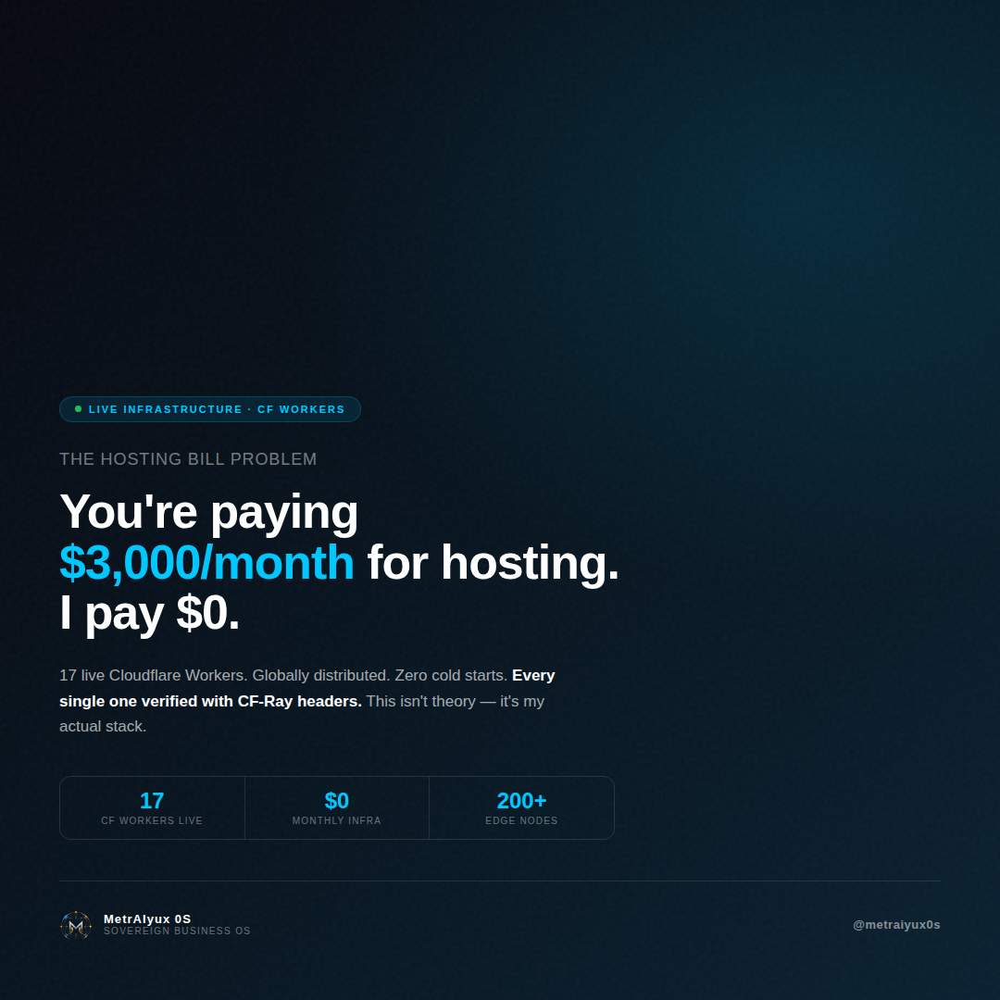
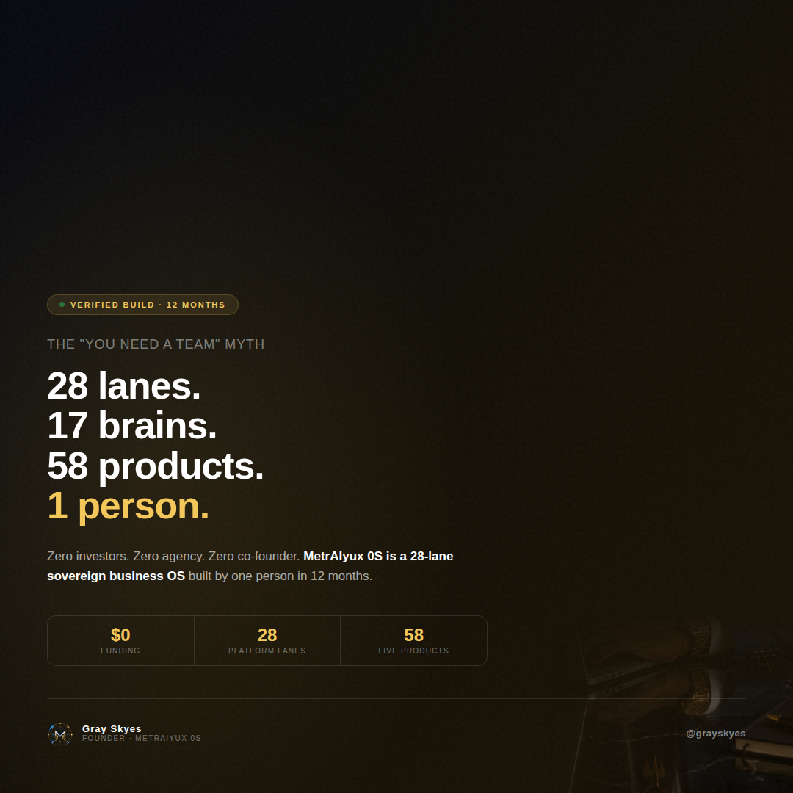
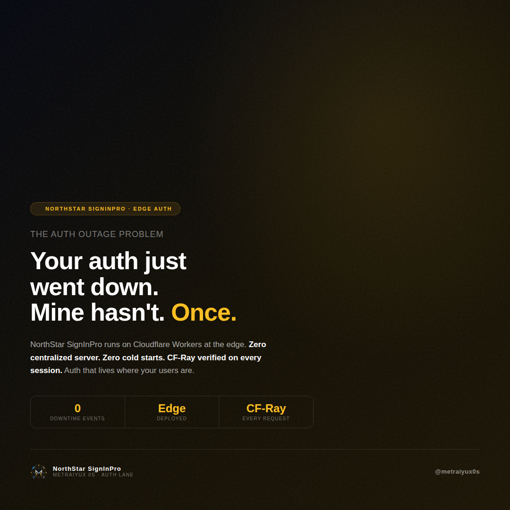
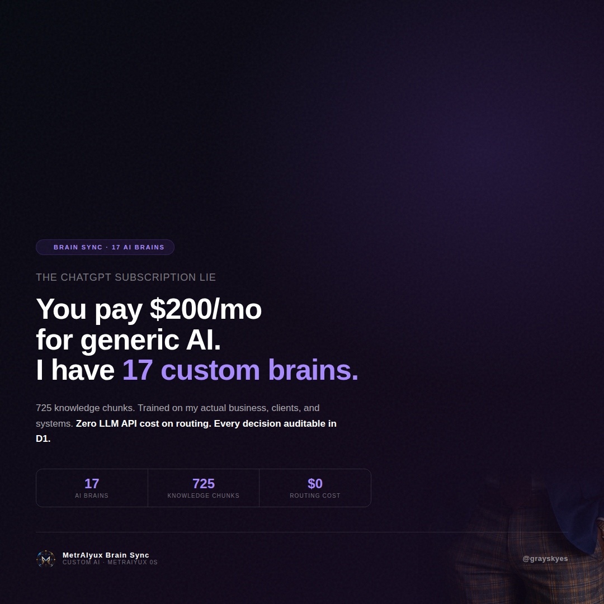
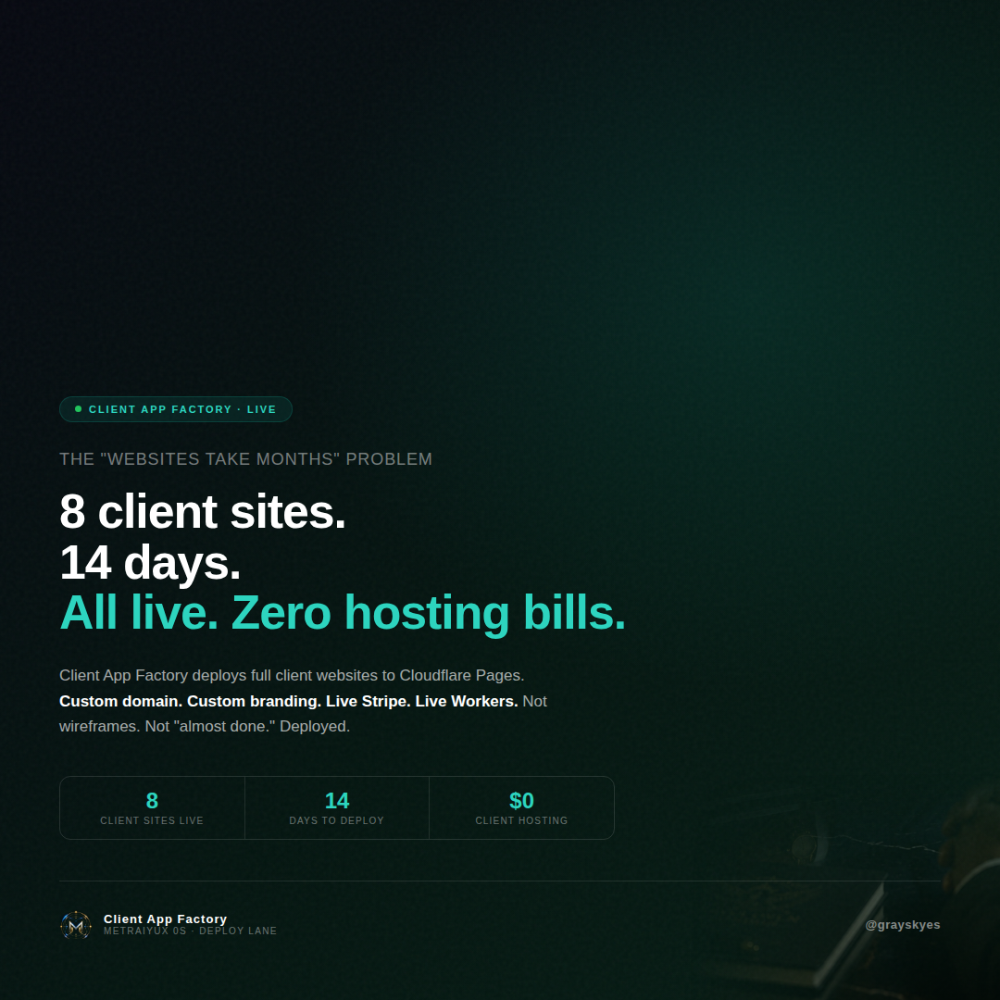
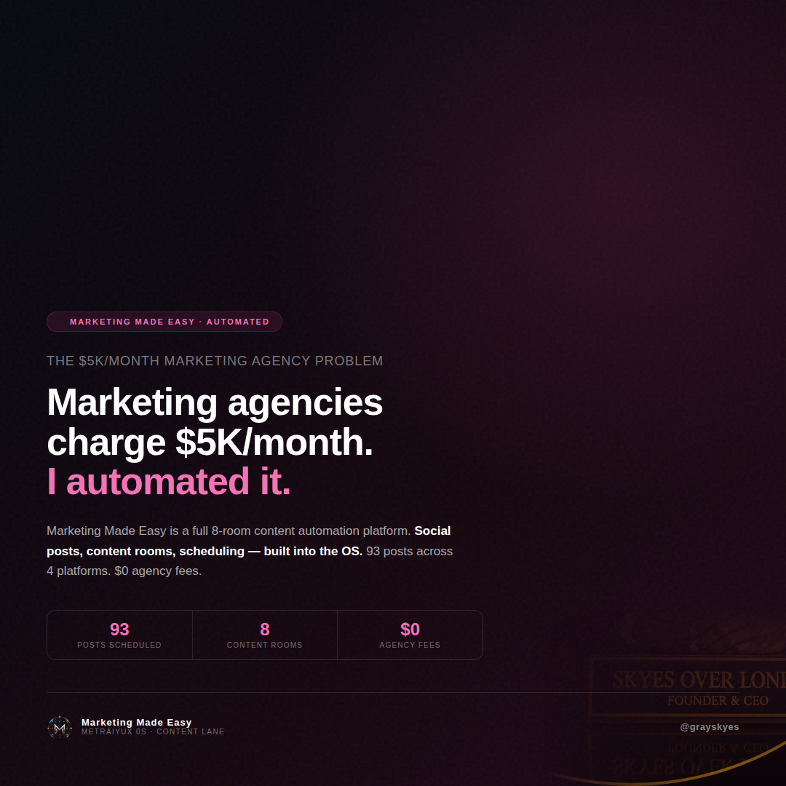
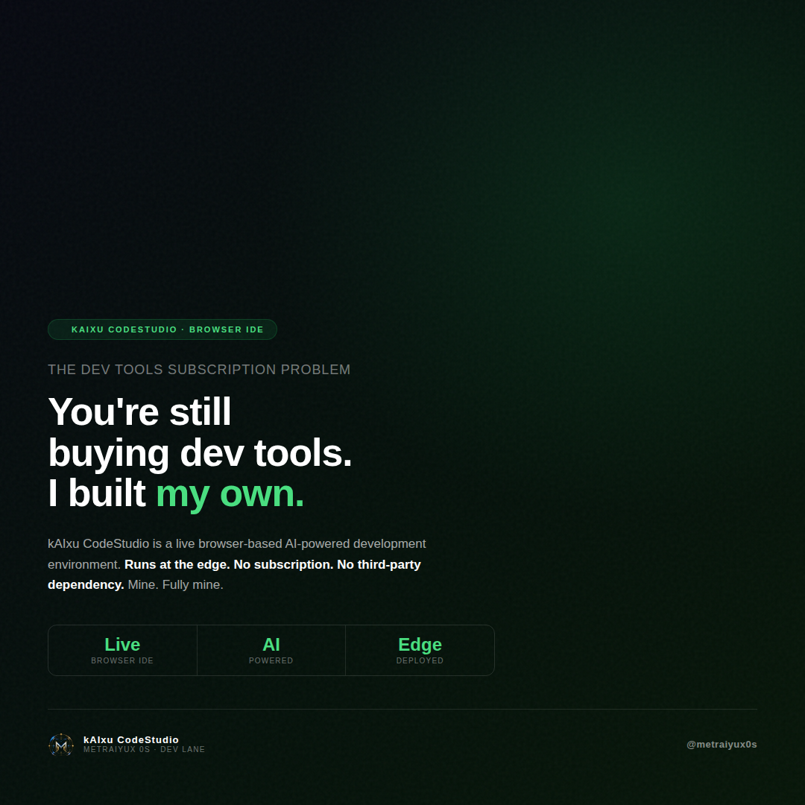
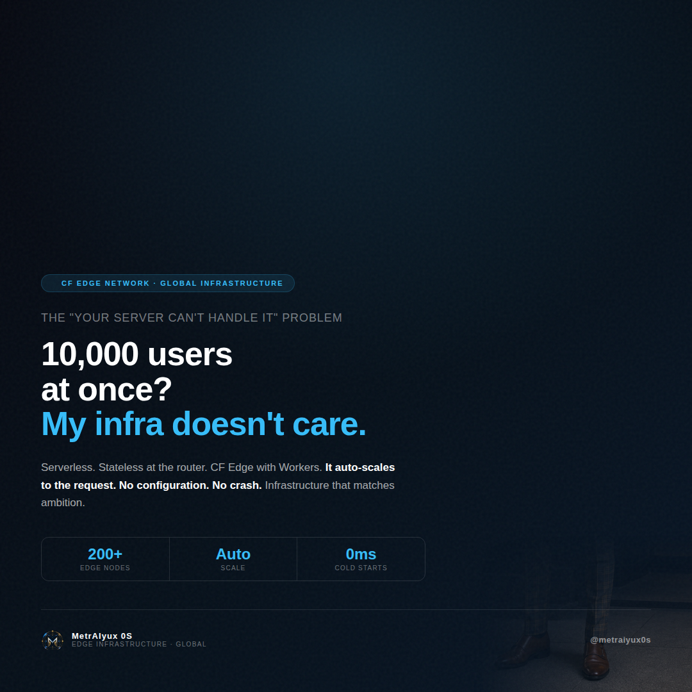
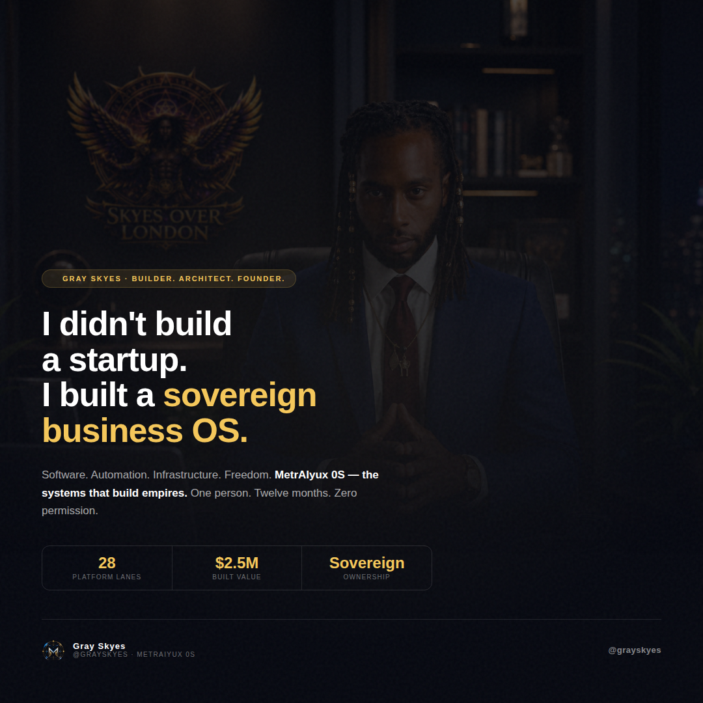

Rich Gray Skyes founder / portfolio page
Gray Skyes.
Founder identity, 12-month build story, principles, lanes, receipts, working-with-me copy.
- Words
- 2982
- Status
- 200
- Route
- /gray-skyes-rich.html
Unified replacement candidate - preview only
This is the consolidated Gray Skyes marketing build: founder portfolio, current 0S home, older b662 home and portfolio route, SkyeKnowology standard, Founder Drops and all captured aliases in one website. No production override, no deletion, no reroute until approval.


Live Browser Proof Console
This is a real in-page proof surface for the candidate. It changes visible state, filters source packages, edits campaign context, and gives the browser verifier enough actions to prove the page can be used instead of only viewed.
Combined Source Inventory
Each card opens the full inline text package lower on this same page. The duplicate aliases are tracked in the source table so separate URLs do not create phantom content.
Founder identity, 12-month build story, principles, lanes, receipts, working-with-me copy.
Current founder page, Gray London Skyes main automation brain, build claims, proof and CTA.
Deity logo, shared auth lane, NorthStar handoff, client app media and live proof requirements.
Current canonical 0S homepage, lane picker, MCP/proof routes, pricing, client app workflow and platform proof.
Older rich 0S home package that also served under /portfolio on b66252ac.
Instagram, LinkedIn, Facebook and Reddit content system with full caption bank and real social card assets.
Portfolio + 0S Value
The root pulls forward the client workflow, proof posture, pricing/value framing, live route language, Bob's/Empire proof references, replacement-cost story, and the founder architecture narrative.
Powered By: SkyeKnowology
All client apps and marketing routes should carry the real logo, shared FS27/NorthStar auth posture, real media requirement, live proof requirement, and no fake generated media policy.
Founder Drops
The separate Founder Drops route remains in the same site, and the full caption bank is also rendered inline below so the content is not just an external route link.

instagram 01
The hosting bill problem
Everyone told me hosting was expensive. They were paying $3,000/month for what I run at $0. 17 live Cloudflare Workers. Globally distributed. Zero cold starts. CF-Ray verified on every single endpoint. This isn't a flex — it's architecture. When you build at the edge you stop renting compute and start owning infrastructure. That's the difference between a SaaS and a sovereign OS.

instagram 02
The "you need a team" myth
If you've been told you need a team to build something real — that's a lie they tell people who might compete with them. The truth is most startup teams are solving a coordination problem that solo execution eliminates. 28 platform lanes. 17 AI brains. 58 Stripe products live. $0 funding. Zero investors. MetrAIyux 0S is a sovereign business operating system. Built by me. Owned by me. No dilution.

instagram 03
The dev agency quote problem
A dev agency quoted my client $180K for a custom platform. I looked at the spec. I build that in 8 weeks. This isn't a hot take — MetrAIyux 0S has a full replacement cost audit. $2.0M–$2.5M based on section-level methodology at CF-edge specialist rates. 875+ deployed HTML surfaces. Every one verifiable with a CF-Ray header or a git receipt. The agency model survives because most founders don't know what's actually possible.

instagram 04
The auth outage problem
It's 2am. Your auth is down. Your users can't log in. This has never happened to MetrAIyux 0S. Not once. NorthStar SignInPro runs on Cloudflare Workers at the edge. No centralized auth server. No single point of failure. CF-Ray on every session. Auth that lives where your users are, not on a server someone manages somewhere.

instagram 05
The ChatGPT subscription lie
I hear founders bragging about using ChatGPT. I have 17 custom AI brains. Trained on my actual business. 725 knowledge chunks. $0 on routing. The difference: generic AI knows the internet. My AI knows MetrAIyux 0S — the code, the clients, the decisions, the receipts. When your AI actually knows your business, it stops being a tool and starts being infrastructure.

instagram 06
The "websites take months" problem
Client asked: "How long does it take to get a live website?" I said 14 days. They laughed. Then I deployed 8 of them in 14 days. Live on Cloudflare Pages. Custom domain. Custom branding. Live Stripe. Live Workers. Not wireframes. Not "almost done." Deployed. Running. CF-Ray verified. Client App Factory is how MetrAIyux 0S turns infrastructure into client deliverables at speed.
instagram 07
The VC funding myth
VCs invest $2M to build what I built in 12 months. Zero investors. Zero dilution. Zero agency. $2.0M–$2.5M in deployed replacement cost. The funding-to-build ratio matters. Most startups aren't underfunded — they're over-headcounted. When you own 100% of a $2.5M platform, you don't need permission to make decisions.

instagram 08
The "demo mode" credibility problem
Not test mode. Not sandbox. cs_live session IDs. 58 Stripe products. Music drops. Staffing fees. Vault access. API tiers. White-label seats. When someone says their product "has Stripe integration" — ask them for the cs_live session ID. That's how you know if it's real. MetrAIyux 0S commerce is verified.

instagram 09
The $5K/month marketing agency problem
Marketing agencies charge $5,000/month. For what? Content calendars, social posts, scheduling. I automated all of it. Marketing Made Easy is an 8-room content automation platform built into the OS. 93 posts across 4 platforms. Scheduled. Ready to drop. I'm not against marketing agencies. I just built the tool they use.

instagram 10
The dev tools subscription problem
Every developer tool you subscribe to used to not exist. Someone built it. kAIxu CodeStudio is a browser-based AI-powered development environment. Runs at the edge. Owned by MetrAIyux 0S. No third-party dependency. Stop renting the tools. Start owning the stack.

instagram 11
The "will it scale?" problem
The question founders always ask: "Will it scale?" Wrong question. The right question: does your infrastructure auto-scale without configuration? MetrAIyux 0S runs on Cloudflare Workers. Serverless. Stateless at the router. 200+ edge nodes. When 10,000 users hit it simultaneously — the infrastructure doesn't notice.

instagram 12
The founder identity
I didn't build a startup. I built a sovereign business operating system. Software. Automation. Infrastructure. Freedom. MetrAIyux 0S is what happens when one person builds without permission, without funding, without a plan to ask anyone for approval. One year. One person. One OS.
linkedin 01
The team myth
Everyone in VC-land tells you that you need a team to build something real. I spent 12 months building MetrAIyux 0S — a 28-lane sovereign business operating system — by myself. Here's the honest breakdown: What a team would have added: → More coordination overhead → More equity dilution → More consensus-seeking → More "wait for the designer / wait for the backend dev" What building solo forced me to do: → Learn every layer of the stack → Make architectural decisions without a committee → Ship ugly first and refine later → Never blame a dependency on another person The result: 17 live Cloudflare Workers, 58 Stripe products in cs_live mode, 875+ deployed surfaces, $2.0M–$2.5M replacement cost. I'm not saying solo is better for every project. I'm saying it was better for this one, at this stage. The "you need a team" advice is real — but so is the coordination tax.
linkedin 02
The funding myth
Let's do honest math on startup funding. Average seed round: $2M Average seed team: 4–6 people Average time to first deployable product: 12–18 months Average founder dilution: 15–25% My situation: Funding: $0 Team: 1 Time to live system: 12 months Dilution: 0% Replacement cost audit: $2.0M–$2.5M I'm not saying this is scalable for every company. I'm saying the model of "raise money to hire people to build what one disciplined person could build" deserves scrutiny. The question isn't "how much can you raise?" The question is: what is the minimum viable team to build the maximum viable product? For MetrAIyux 0S, that number was 1.
linkedin 03
The infrastructure cost
The infrastructure cost conversation is broken. Most SaaS founders budget $500–$3,000/month for hosting before they've validated a single user. MetrAIyux 0S runs 17 live Cloudflare Workers, 7 D1 databases, KV stores, and 875+ deployed HTML surfaces. Monthly infrastructure cost: $0. Here's the actual architecture: → CF Workers: $0 (free tier covers 100K requests/day) → CF Pages: $0 (unlimited deployments) → CF D1: $0 (5GB free tier) → CF KV: $0 (1M reads/day free) The edge compute model fundamentally changes the unit economics of SaaS. You don't need to pre-pay for servers you haven't filled yet. You pay for what you use, when you use it — and at this scale, that's $0.
linkedin 04
The generic AI problem
The generic AI problem: ChatGPT knows the internet. Your business isn't on the internet in the way that matters. I have 17 custom AI brains in MetrAIyux 0S. Each one trained on real operational data: code, decisions, receipts, client notes, system docs. Why this matters: → Generic AI gives generic advice → Trained AI gives specific, actionable, context-aware responses → Trained AI knows your actual constraints, not hypothetical ones Implementation: 725 knowledge chunks. Each brain is domain-specific (auth, payments, marketing, dev, etc). Routing is zero-cost. Every decision is logged in D1. Fully auditable. The question isn't "should I use AI?" The question is "what specifically should my AI know?" Until you answer that, you're using a generic tool for a specific problem.
linkedin 05
The agency pricing problem
I had a conversation with a founder last month. Agency quote: $180K for a custom SaaS platform. Timeline: 8–12 months. What they were actually building: a CRUD app with auth, payments, and a dashboard. I asked: "What's the $180K buying you?" Answer: Project management overhead, designer retainers, developer hours, QA cycles, stakeholder reviews. This is the agency model. It's not a scam — it's just heavily padded to account for coordination costs. The alternative: build with modern infrastructure and eliminate the coordination tax. MetrAIyux 0S cost audit: $2.0M–$2.5M replacement cost. $0 in agency fees. Every surface has a CF-Ray or git receipt. I'm not saying agencies are wrong. I'm saying you should know what "the other path" looks like before you sign.
linkedin 06
The founder identity
"Sovereign infrastructure" sounds abstract. Let me make it concrete. When I say MetrAIyux 0S is a sovereign business OS, I mean: 1. I don't pay Shopify 2% of every transaction 2. My auth isn't controlled by Auth0's pricing model 3. My email isn't Mailchimp's data 4. My AI isn't OpenAI's rate limit 5. My storage isn't AWS's egress fee 6. My deployments aren't Vercel's bandwidth cap Every critical piece of infrastructure is owned, operated, and verifiable by me. This isn't anti-SaaS. It's pro-ownership. There's a massive difference between using a tool and being dependent on a tool. When you control the infrastructure, you control the business. That's what sovereign means.
linkedin 07
The scaling question
Every investor, every advisor, every well-meaning senior dev asks: "Will it scale?" Here's the thing — it's the wrong question. The right questions: 1. Does the architecture auto-scale without configuration? 2. What's the failure mode at 10× current load? 3. Where are the centralized bottlenecks? MetrAIyux 0S architecture answers: 1. Cloudflare Workers — yes, auto-scales to the request 2. Stateless design — no session server to overload 3. Edge distribution — no single region to saturate When someone asks "will it scale?" they usually mean "will your server crash?" That's a centralized server question. I'm not running a centralized server. Build at the edge. The scaling question stops being a question.
linkedin 08
The marketing cost problem
Marketing Made Easy is one of the 28 lanes in MetrAIyux 0S. It's an 8-room content platform. Social post creation, content scheduling, platform-specific formatting, hashtag generation — all automated. Cost: included in the OS. Monthly agency equivalent: $0. What this replaced: → Social media manager retainer: $2,500/month → Content calendar tool: $200/month → Scheduling platform: $300/month → Copywriting: $1,500/month Total monthly savings: ~$4,500+ I'm not against marketing agencies. Some clients need hands-on management. But the operational layer — content creation, scheduling, formatting — is fully automatable. 93 posts across 4 platforms. Scheduled. Ready. $0 in agency fees.
facebook 01
The solo build story
Honest story time for this group. 12 months ago I started building MetrAIyux 0S. No co-founder, no investors, no agency. People kept telling me I needed a team to build something real. Today I have: • 28 platform lanes live • 17 Cloudflare Workers running • 58 Stripe products in live mode (cs_live verified — not test mode) • $2.0M–$2.5M replacement cost audit • $0 funding raised I'm not posting this to flex. I'm posting this because I was this close to listening to the people who said "you can't do it alone." You probably can do more than you think. The question is whether you're willing to push through the part where it looks impossible.
facebook 02
The hosting cost truth
Real question for this group: how much are you spending on hosting? I have 17 live Cloudflare Workers, databases, KV stores, and 875+ deployed web surfaces. Monthly hosting cost: literally $0. Before anyone calls BS — here's the actual breakdown: Cloudflare Workers free tier: 100,000 requests/day CF Pages: unlimited deployments and bandwidth CF D1 database: 5GB free CF KV: 1M reads/day free Most solo founders and small business owners are massively overpaying for hosting because nobody taught them the Cloudflare edge model. Happy to answer questions. Not trying to sell anything — just think more people should know this is an option.
facebook 03
The client delivery speed
Someone asked me how long it takes to build and deploy a client website. I said: "Depends on complexity, but usually 3–5 days for a standard build." They didn't believe me. Then I showed them: 8 client sites deployed in 14 days. All live on Cloudflare Pages. All with custom branding, live payment processing, and working contact forms. No outsourcing. No templates from Wix. Real code, real infrastructure. The secret: Client App Factory is one of the 28 lanes in MetrAIyux 0S. It's a deploy system built specifically for fast client turnarounds. If you're a freelancer or agency and delivery speed is your bottleneck, happy to talk architecture.
facebook 04
The funding question
The most common question I get: "How much did you raise?" Answer: $0. Follow-up: "So how did you build all this?" Answer: I built it. Like, I actually sat down and built it. I know that sounds simple. But there's a gap between "wanting to build a company" and "sitting down every day and building." Most people are stuck in the first one, waiting for funding to justify moving to the second one. MetrAIyux 0S — 28 platform lanes, $2.0M–$2.5M replacement cost — was built on the second model. No funding round is going to build the thing. You building the thing builds the thing.
facebook 05
The marketing cost
I used to think marketing required a team or an agency. Then I built Marketing Made Easy — 8 rooms of automated content creation built directly into MetrAIyux 0S. What it does: • Generates social posts by platform (IG, LinkedIn, Facebook, Reddit) • Formats content for each platform's algorithm • Schedules and stages posts • Tracks engagement context What it costs me: $0/month in agency fees. 93 posts scheduled across 4 platforms. I'm posting this post using the same system. If you're a small business owner spending $2K–$5K/month on marketing agencies, I'd genuinely encourage you to look at what's automatable before signing another retainer.
facebook 06
The ownership question
Nobody asks this question about their software: who actually owns this? Your Shopify store — Shopify owns the platform. You rent space. Your Mailchimp list — Mailchimp owns the delivery relationship. Your Auth0 login — Auth0 owns the session logic. Your Vercel deployment — Vercel owns the edge. I'm not saying these products are bad. I use some of them. I'm saying you should ask the ownership question before you build critical business logic on rented infrastructure. MetrAIyux 0S is a sovereign OS because everything critical runs on infrastructure I control. CF Workers I deploy. Databases I own. Auth systems I built. The more sovereign your stack, the less leverage third parties have over your business.
reddit 01
r/selfhosted · Infrastructure
I've been building MetrAIyux 0S for 12 months and recently did a cost audit. Thought the selfhosted community might find the architecture interesting. **What's running:** - 17 Cloudflare Workers (auth, email, payments, AI routing, Git vault, etc.) - 7 D1 SQLite databases - KV stores for session and config data - 875+ HTML surfaces deployed to CF Pages - Stripe webhooks processing via Workers **Monthly infra cost: $0** CF Workers free tier is 100K requests/day, which covers current load. Pages is unlimited. D1 is 5GB free. KV is 1M reads/day free. **What's not free:** - Custom domain: $12/year - Stripe fees on actual transactions - That's genuinely it The tradeoff: you're on Cloudflare's platform, not truly self-hosted. But the pricing model and developer experience are genuinely excellent for this use case. Happy to answer specific architecture questions. Not selling anything — just sharing what's worked.
reddit 02
r/artificial · AI Implementation
**Background:** I run MetrAIyux 0S, a 28-lane business OS. 12 months ago I made a deliberate architecture choice: instead of calling GPT-4 for everything, I built 17 domain-specific knowledge bases (I call them "brains") trained on actual operational data. **Why I did this:** Generic LLMs give generic advice. My AI needed to know MetrAIyux-specific context — not "how do you do auth" but "how does NorthStar SignInPro handle the FS27 service binding specifically." **Implementation:** - 725 knowledge chunks across 17 domains - Routing is done via lightweight classifier — $0 cost - Each brain is a RAG implementation with domain-specific embeddings - All decisions logged in D1 (Cloudflare's SQLite) **What I learned:** 1. Specificity beats capability. A specific brain on a weaker model beats a generic brain on GPT-4 for domain tasks. 2. The routing cost matters. If every query hits a big model, costs compound fast. My routing is nearly free. 3. Auditability is underrated. Logging every AI decision to D1 has saved me countless debugging hours. **What didn't work:** - Trying to make one brain handle too many domains (quality degraded) - Over-engineering the embedding pipeline early (premature optimization) AMA on the implementation if useful.
reddit 03
r/entrepreneur · Agency vs DIY
A client showed me a quote from a dev agency: $180K for a custom SaaS platform with auth, payments, dashboard, and API. 8-week timeline (they wanted 12 months). I offered to build it as part of MetrAIyux 0S deployment. Here's my honest breakdown of where the $180K goes and what the alternative is: **Where agency $180K goes:** - PM overhead and stakeholder management: ~$25K - Designer (UI/UX iterations, review cycles): ~$30K - Frontend dev hours: ~$35K - Backend dev hours: ~$35K - QA and testing cycles: ~$20K - Infrastructure setup and DevOps: ~$15K - Buffer/risk contingency: ~$20K **Why it's not a scam:** This is real work. The coordination overhead is real. The iteration cycles are real. The PM time is real. **What the alternative actually requires:** 1. You or someone on your team needs to understand the full stack 2. You need to make architectural decisions without a committee 3. You need to accept "ugly and working" before "polished and done" 4. You need CF Workers / modern edge infra knowledge Most of that $180K is paying for coordination costs that don't exist when one person knows the whole stack. MetrAIyux 0S replacement cost audit: $2.0M–$2.5M. Agency fees paid: $0. Not saying this is replicable for every team/project. Saying the gap between "agency quote" and "reality" is mostly coordination overhead, not actual complexity.
reddit 04
r/webdev · Scaling Architecture
The "will it scale?" conversation is broken in most startup discussions. Here's what actually matters: **The wrong question:** "Will it scale?" **The right questions:** 1. Is my architecture stateless at the request level? 2. Am I depending on a single-region compute resource? 3. Does my database have a connection limit problem? 4. What's the failure mode at 10× current load? **MetrAIyux 0S architecture (for context):** - All request handling: Cloudflare Workers (stateless, edge-distributed) - Database: CF D1 (SQLite, edge-collocated reads) - Session state: CF KV (globally replicated) - Static assets: CF Pages (CDN-native) **What this means practically:** - No centralized server to overload - No connection pool to saturate - No cold start penalty under load - Auto-scales to the request, not to the server **Tradeoffs I accepted:** 1. Workers have a 10ms CPU time limit on free tier (not wall clock time — actual CPU) 2. D1 isn't a Postgres replacement for complex relational queries 3. KV has eventual consistency (not strong consistency) 4. You're in Cloudflare's ecosystem — that's a vendor lock consideration For most solo founders and small teams, these tradeoffs are irrelevant at early scale and the benefits are massive. The "scalability" anxiety most early-stage founders have is about centralized server architecture. If you're not on centralized servers, the anxiety mostly goes away.
Source Vault
These are the actual fetched text packages from the URLs you listed. Duplicates are grouped instead of pretending every alias has different content.
Full Source Package
Founder identity, 12-month build story, principles, lanes, receipts, working-with-me copy.
Gray Skyes — Builder. Architect. Founder. MetrAIyux 0S ← Marketing Site Capabilities Valuation No Competitors Social Founder Drops Portfolio Work With Me Founder · Architect · Builder Gray Skyes. The one who built MetrAIyux 0S 1 person. 1 year. $0 in funding. I built a sovereign business operating system from scratch — 17 Cloudflare Workers, 28 platform lanes, 17 AI brain personas, 58 live Stripe products, and 875+ deployed HTML surfaces. Pre-revenue. Infrastructure-complete. Zero direct competitors. 17 Workers 28 Lanes 17 AI Brains 58 Products 875+ Surfaces $0 Funding $2.0M+ Value ↗ Work With Me See the Live System Founder Content Who I Am Not a developer. An architect. Not a startup. A sovereign OS. Most developers build features inside someone else's platform. I built the platform — the entire operating layer that a business actually runs on. The kind of thing funded engineering teams spend $3–5M and 18–24 months building. I built it alone, in a year, at zero funding. My name is Gray Skyes . Phoenix, AZ. I run Skyes Over London — the company behind MetrAIyux 0S. But more than that, I am the person who decided that the systems most companies rent from 12 different SaaS vendors should be one sovereign stack — built from scratch, deployed at the edge, owned outright, with proof at every layer. I think in systems, not features. That means when I look at a problem, I don't ask "what tool can I buy to solve this?" I ask "what does the architecture look like if I own the answer completely?" Auth connects to payments. Payments connect to AI. AI connects to realtime. Realtime connects to legal. Legal connects to staffing. When you see them as separate tools, you buy 12 subscriptions. When you see them as a system, you build one OS. I built mine. It's called MetrAIyux 0S. It runs live. It has CF-Ray headers, cs_live Stripe session IDs, git clone receipts, and D1 audit logs behind every number I put in front of you. I don't do estimates. I do receipts. Cloudflare Workers Durable Objects K8s Postgres Git Smart-HTTP AI Architecture Stripe Billing Full-Stack TypeScript Edge Computing System Design WebSocket / DO npm SDK BLAKE3 Auth The Build Story What 12 months of sovereign building actually looks like. It starts with a decision. Not "let me try building something" — but "I will not stop until the system is complete and every claim has a receipt." That's the only reason MetrAIyux 0S exists in its current form. Discipline that doesn't negotiate with doubt. Month one was auth. SkyeGate FS27 — BLAKE3-scoped API keys, OAuth, Twilio MFA, multi-tenant allowlists. 20,284 lines. Not because it was the easiest place to start. Because auth is the foundation. If you can't prove who's inside, nothing else matters. Then email. Then database — a full K8s HA Postgres cluster with PITR, WAL streaming, custom operator, and disaster recovery drills. Not managed cloud. Sovereign. Because I'm not building a platform that depends on someone else's uptime. Then Git. Then AI. Then payments. Then realtime. Then staffing. Then music. Then legal. Then marketing. Then client apps. Then the SDK. Each lane built from first principles. Each lane running live. Each lane verified. 28 lanes. One person. One year. The approach was never "I'll integrate Stripe" or "I'll wrap Auth0." The approach was always: what does it look like if I own this completely? The Stripe integration isn't bolted on — it's 58 live products in cs_live mode, receipted to individual session IDs, covering music, staffing, API tiers, vault access, and white-label seats. The AI isn't "ChatGPT connected to a dashboard." It's 17 custom AI brain personas, 725 knowledge chunks, deterministic routing at zero LLM cost, and a central routing brain named after me — Gray London Skyes . When the OS makes its most complex cross-domain decisions, it routes them through a digital version of the person who built it. What you're reading about isn't a vision or a roadmap. It's deployed. 17 Cloudflare Workers live. 875+ HTML surfaces indexed. 8 D1 databases at the edge. Git protocol running inside a Worker. WebSocket rooms with AI policy enforcement. A published npm SDK. An independent cost audit: $2.0M–$2.5M. One year. $0 in funding. Zero investors. Zero co-founder. Zero agency. The build speaks for itself. The receipts are available on request. AI Persona · Central Routing Brain Gray London Skyes The Founder, Encoded. MetrAIyux 0S has 17 AI brain personas — each one owns a specific domain of the operating system. Auren is the routing brain that connects them all. But when Auren has to make the highest-stakes, most cross-domain decisions, it defers to the central reasoning brain: Gray London Skyes. That's me. My thinking, my architectural philosophy, my decision patterns — encoded into 725 knowledge chunks, running inside the platform I built. When the OS faces a hard call, it thinks the way I think. That's not a feature. That's sovereignty at the identity layer. 17 brains. 725 knowledge chunks. Zero LLM API cost on routing decisions. Every decision logged, receipted, and auditable in D1. Not a black box. Not a prompt wrapper. A system that reflects the person who designed it. The Operating Philosophy Five principles behind every build. 01 · Proof First Every claim has a CF-Ray header, a cs_live session ID, a git receipt, or a D1 log entry. If it can't be verified, it doesn't get said. This is why the numbers on this page are specific and not rounded. 02 · Sovereignty Over Convenience Renting infrastructure is a liability. Every critical system in MetrAIyux 0S is owned. Auth is ours. Database is ours. AI is ours. Git is ours. When you own your infrastructure, you don't negotiate with someone else's pricing model. 03 · Systems, Not Features Features are moments. Systems are leverage. I don't build one thing — I build the infrastructure that makes every thing possible. The reason MetrAIyux 0S has 28 lanes is that I refused to stop at "feature complete." 04 · No Permission Required I didn't wait for funding to start. I didn't wait for a co-founder to agree. I didn't wait for market validation before building. If the system is right, you build it. The market catches up later. Waiting for permission is how ideas stay ideas. 05 · Edge or Nothing Centralized servers are yesterday's architecture. MetrAIyux 0S runs on Cloudflare's global edge. 200+ nodes. No cold starts. No single point of failure. Infrastructure that scales to the request without configuration or panic. Gray Skyes The founder. Phoenix, AZ. Builder of Skyes Over London. Founder of MetrAIyux 0S. The person behind 28 platform lanes, 17 AI brains, 58 live products, and $2.0M–$2.5M in deployed infrastructure. The Receipts What "built it" actually means. These aren't estimates or projections. Every number has a CF-Ray header, a cs_live session ID, a git receipt, or a D1 audit log behind it. Proof is not optional. It's the only currency that matters. 17 Cloudflare Workers — Live Real service bindings. CF-Ray verified on every endpoint. Auth, email, AI routing, Git, payments, realtime, security, dispatch — each owns its domain. 28 Platform Lanes — Deployed Auth, email, database, Git vault, AI, payments, realtime, music, staffing, legal, directory, content, marketing, client apps, dev studio — and 13 more. Built. Not planned. 58 Stripe Products — cs_live Verified Not test mode. Not sandbox. cs_live session IDs confirmed. Music drops, staffing fees, vault access, API tiers, white-label seats. Real commerce. 875+ Deployed HTML Surfaces Indexed and functional. 78 of those carry verified CF-Ray proof on record. Not wireframes. Not Figma exports. Running edge-deployed pages. 43K+ Lines of Code — SkyeMail Alone 43,395 lines in the email platform. SkyeGate FS27 auth: 20,284 lines. SOL Staffing: 10,270+ lines. These aren't small integrations. 8 Active D1 Databases — Edge Auth tokens, routing logs, receipt entries, realtime events, AI decisions — all stored in edge-native D1. No centralized database to fail. K8s HA Postgres — CitadelDB Custom K8s operator. PITR. WAL streaming. Hot standby. DR drills run and passed. Not managed cloud. Sovereign infrastructure at the data layer. Git Smart-HTTP Inside a Worker Full Git protocol: clone, push, fetch, snapshot, restore, policy enforcement. D1 as pack store. FS27 auth per workspace. All protocol checks passed. 18 Relay13 Proof Checks — All Green WebSocket connect, AI policy enforcement, quota tracking, D1 persistence, session receipts, historical replay — every scenario tested and passing. 17 AI Brain Personas 725 knowledge chunks. Deterministic routing at zero LLM cost. Central brain: Gray London Skyes — the founder, encoded. Every decision logged in D1. $2.5M Platform Replacement Cost $2.0M–$2.5M. Independent cost audit. Replacement cost for a funded team: $3–5M over 18–24 months. One person. One year. At a fraction of that. 0 Direct Competitors GoHighLevel, Firebase, Supabase, Retool, Bubble — none of them ship auth + DB + AI + Git + realtime + payments + music + staffing as a sovereign package. The 28 Platform Lanes Every lane. Every one built. Not integrated. Not acquired. These are not integrations or API wrappers. Every system below was designed from first principles, written in full, deployed to Cloudflare's global edge, and verified with real proof artifacts. The full list is the proof that MetrAIyux 0S is an OS — not a dashboard. SkyeGate FS27 — Auth Platform BLAKE3-scoped API keys, OAuth, Twilio MFA, bearer tokens, multi-tenant allowlist. 20,284 lines. The auth layer that every other lane depends on. SkyeMail — Sovereign Email Platform Stalwart mail server + CF Worker + Netlify. Gmail OAuth integration. Spam filtering. 43,395 lines. Full mailbox sovereignty — no Google Workspace dependency. CitadelDB — Sovereign Database K8s HA Postgres with PITR, WAL streaming, custom operator, DR drills completed and passed. Your data runs on infrastructure you control. SkyeVault — Git Protocol OS Real Git smart-HTTP (clone, push, fetch, snapshot, restore, policy) running inside a CF Worker with D1 as the pack store. Git at the edge. SkyeSecure FS27 — Secret Custody Encrypted secret packs. Live proof counts. Per-workspace isolation. Every secret auditable and receipted. No secrets leaving the OS boundary. kAIxu 6.7 — Proprietary AI Engine 5-variant AI model family (Nano → Max). Plan-gated access. White-label branded as yours. Not OpenAI, not Anthropic — your AI with your name on it. kAIxu CodeStudio — Browser IDE Live browser-based AI-powered development environment. Runs at the edge. AI assistance, code execution, project management — in the browser, on the OS. 0meg4kAI — Security Scanner Two-layer edge + browser scanning. Tenant isolation. Quarantine queue. Every public post scanned before release. Content safety at the OS layer. Relay13 + ConnectLog — Realtime Durable Objects WebSocket rooms. Per-workspace AI policy enforcement. Usage cost ledger. 18 proof checks — all green. Stateful realtime at the edge. SkyePay — Payment Operating System 58 live Stripe products — cs_live verified. Every revenue surface receipted. Music, staffing, vault, API tiers, white-label billing. Commerce at every layer. SkyeRouteX — Dispatch OS Workforce routes, contractor management, dispatch ledger, payment integration, GPS-level tracking. Full logistics lane. Not a module — a complete system. Auren — Central AI Routing Brain 17 brains. 725 knowledge chunks on-device. Deterministic keyword routing. Zero LLM API cost per routing decision. The AI nervous system of MetrAIyux 0S. SkyeMusicNexus — Music Platform Native browser DAW, Drops Room, Artist Exchange, Rights Vault (Git-backed), Split Engine, Release Forge. A complete music industry OS inside the platform. Valley Verified — Business Directory 875+ Phoenix AZ businesses. Every listing is a real edge-deployed surface. Custom branded apps for paying business owners. Local commerce, sovereign infrastructure. Content Forge + SkyeMediaCenter Content creation and media management surfaces. Approval-gated publishing with full owner control. Your content pipeline — not a third-party CMS. Marketing Made Easy — 8 Content Rooms Full growth suite: social post generation, brand identity, launch packs, content scheduling, Arizona market intelligence. 93 posts across 4 platforms. $0 agency fees. SkyeProfitConsole + Split Engine Financial intelligence layer. Revenue tracking, royalty splits, profit visibility, real-time margin monitoring. Know your numbers at every level, all the time. HouseOps + SkyeBox Internal operations surface and encrypted secure storage. Operational backbone of the OS. Private. Sovereign. Accessible only to authorized owners. SOL Staffing — Workforce Platform 89 pages. 10,270+ lines. Intake → Screening → Placement → Payment → Dispatch. The most complete staffing OS ever deployed on a single Cloudflare Worker. LegalSkyes + @metraiyux/0s-sdk Contract routing, compliance automation, risk classification. Published npm SDK with TypeScript types, FS27 service binding, 4 legal templates at install. CROWN OS — Owner Control Room Every critical action in the OS requires explicit owner approval through CROWN. Nothing moves without authorization. Full operational oversight at one surface. NEXUS OS — CRM Record Mesh CRM layer that connects across all 28 lanes. Clients, contacts, deal history, interaction receipts — unified in one sovereign intelligence layer. Ascension + APEX — Sales OS Buyer intel, deal rooms, revenue war room, proof export. APEX handles expansion strategy and the scaling layer. Where deals become deployments. NorthStar SignInPro — Edge Auth Dedicated auth surface at the edge. Zero centralized server. CF-Ray on every session. Auth that lives where your users are — globally distributed by default. Client App Factory — Deploy OS Build and deploy full client websites to Cloudflare Pages at speed. 8 client sites in 14 days. Real code, real infrastructure, zero hosting bill for clients. Free99 + SkyeMerit — Reputation Layer Permanent free tier with no credit card required, no timer. SkyeMerit reputation system active from day one. Trust infrastructure baked into the OS. Admin OS + 0s SkyeWay 28-lesson deployment tutorial, full route atlas, infrastructure intelligence dashboard. See every surface, every lane, every Worker — from one command surface. Quantum Ops — Infrastructure Intelligence Live system health monitoring, deployment ledger, route verification, cost visibility. The operational brain that watches the entire MetrAIyux 0S stack in real time. How I Operate What working with me actually looks like. I'm not an agency. I'm not a freelancer who disappears after delivery. I'm the person who built a $2.5M platform alone in 12 months — which means I have a very specific way of engaging, a very high standard of proof, and a very clear idea of what "done" means. ⚙ Sovereign Infrastructure Deployment Deploy the full MetrAIyux 0S stack — or any slice of it — into your Cloudflare account. Your KV. Your D1. Your Workers. Your data. Full white-label in under 30 minutes. $49–$1,997/mo per deployment tier. Infrastructure you own, not rent from someone else. CF Workers D1 / KV / R2 wrangler edge-native 🧠 Custom AI Architecture I don't bolt ChatGPT onto a dashboard and call it AI. I design AI systems with deterministic routing, sovereign data handling, and zero LLM cost on decisions that don't require it. Your AI runs in your infrastructure, branded as yours, accountable to your owners. kAIxu 6.7 Auren routing on-device corpus D1 receipts 💳 Full Payment Infrastructure I built a payment OS with 58 live Stripe products across a dozen revenue types. Subscriptions, one-time purchases, owner-approval flows, royalty splits, staffing fees. Your business has multiple revenue streams — your payment system should reflect that. Stripe cs_live SkyePay Split Engine receipted 🔐 Multi-Tenant Auth Systems BLAKE3-scoped API keys. OAuth. Twilio MFA. Bearer tokens. Per-workspace allowlists. 20,284 lines of production auth code are the reference implementation. I can scope, gate, and audit access for any user surface, at any scale. BLAKE3 keys OAuth MFA multi-tenant ⚡ Realtime Systems at the Edge Durable Objects WebSocket rooms with AI policy enforcement, cost ledgers, and proof receipts. 18 verified proof checks in production. Stateful realtime that runs at 200+ global Cloudflare edge nodes. Durable Objects WebSocket DO hibernation policy-gated 🏗 OS-Level System Design If your company needs something that doesn't fit inside a SaaS tool — a platform that works the way your business actually operates — I design and build the full system. Auth to payments to AI to realtime to legal. Receipted at every layer. Yours to own indefinitely. system design full-stack sovereign custom OS 🎵 Vertical-Specific Platforms SOL Staffing (89 pages, 10K+ lines). SkyeMusicNexus (native DAW, rights vault, royalty splits). Valley Verified (875+ Phoenix businesses). I build the complete vertical platform for your industry — not a template. A system. staffing music directory any vertical 📦 White-Label OS for Agencies Deploy MetrAIyux 0S under your brand. Your logo. Your domain. Your clients. Your pricing. A 28-lesson tutorial walks your team through everything. Zero architecture work on your end. Infrastructure done. You deploy and sell. white-label $49–$1,997/mo your brand recurring revenue "I didn't buy a tool and call it a platform. I didn't wrap an API and call it AI. I didn't integrate three services and call it a stack. I built the thing that all of that wishes it could become. " — Gray Skyes · Founder, MetrAIyux 0S · Phoenix, AZ Live Receipts Every claim is verified. Ask for the receipts. CF-Ray header on every Cloudflare Worker endpoint — globally verifiable 58 cs_live Stripe session IDs confirmed — not test mode, not sandbox Git clone/push/fetch/snapshot/restore running in a CF Worker — all protocol checks passed 18 Relay13 realtime proof checks — WebSocket, AI policy, D1 persistence, historical replay — all green CitadelDB DR drill — completed and passed. K8s HA Postgres with PITR and WAL streaming @metraiyux/0s-sdk published on npm — TypeScript types, FS27 service binding, 4 legal templates 78 surfaces with individually verified CF-Ray headers on record — available for audit $2.0M–$2.5M replacement cost — independent methodology. Funded team: $3–5M over 18–24 months Ready to build something real? If you're an investor, an operator, an agency owner, or a company that needs infrastructure built at this level — reach out. I build things that work, that run, and that belong to you. graylondonskyes@gmail.com Live Platform Platform Valuation No Competitors White Label Full Capabilities Sell Sheet Gray Skyes · Skyes Over London · Phoenix, AZ · graylondonskyes@gmail.com · MetrAIyux 0S
Full Source Package
Current founder page, Gray London Skyes main automation brain, build claims, proof and CTA.
Gray Skyes — Builder. Architect. Founder. MetrAIyux 0S ← Marketing Site Capabilities Valuation No Competitors Social Work With Me Founder · Architect · Builder Gray Skyes. The one who built MetrAIyux 0S 1 person. 1 year. $0 in funding. I built a sovereign business operating system from scratch — 17 Cloudflare Workers, 23 platform lanes, 17 AI brain personas, 58 live Stripe products, and 875+ deployed HTML surfaces. Pre-revenue. Infrastructure-complete. Zero direct competitors. 17 CF Workers 23 Platform Lanes 17 AI Brains 58 Live Stripe Products 875+ Deployed Surfaces $0 Funding Work With Me See the Live System Full Capabilities Who I Am Not a developer. An architect. Most developers build features. I built an operating system — the kind of thing funded engineering teams spend $3–5M and 18–24 months building. I built it alone, in a year, with no outside capital. That requires more than code. It requires system thinking — understanding how auth connects to payments connects to AI routing connects to realtime connects to legal connects to staffing, and making it sovereign from the ground up. That's what I built. That's how I think. I'm Gray Skyes. Phoenix, AZ. I run Skyes Over London — the company behind MetrAIyux 0S. The AI brain inside the platform called Gray London Skyes is the main automation brain that connects all 17 AI personas. The founder is the OS. The OS is the founder. Cloudflare Workers Durable Objects K8s Postgres Git Protocol AI Architecture Stripe Billing Full-Stack Edge Computing System Design TypeScript WebSocket / DO npm SDK AI Persona · Central Routing Brain Gray London Skyes Main Automation Brain MetrAIyux 0S has 17 AI brain personas — each owns a domain of the business. The central routing brain, the one Auren defers to when connecting all 17, is named Gray London Skyes . That's me. Encoded into the platform I built. When the OS routes its most complex, cross-domain decisions, it routes them through a digital version of the person who built it. 725 knowledge chunks. 17 brains. Zero LLM API cost on routing. Every decision logged, receipted, and auditable in D1. The receipts What "built it" actually means. These aren't estimates. Every number below has a CF-Ray header, a cs_live session ID, a git clone receipt, or a D1 log entry behind it. 17 Cloudflare Workers Live service bindings. CF-Ray verified on every endpoint. Real Workers, not lambda functions behind a name. 23 Platform Lanes Auth, email, database, Git vault, AI, payments, realtime, music, staffing, legal, directory, content, marketing — and more. 58 Stripe Products — cs_live Not test mode. Not demo. cs_live session IDs confirmed. Music drops, staffing fees, vault access, API tiers, white-label seats. 875+ Deployed HTML Surfaces Indexed and functional. 78 of those have verified CF-Ray proof on record. Not wireframes. Not Figma. 43K+ Lines — SkyeMail Alone 43,395 lines of production email platform code. Stalwart integration + CF Worker + Netlify. SkyeGate FS27: 20,284 lines. 8 Active D1 Databases Edge-side. High-frequency transactional. Auth tokens, routing logs, receipt entries, realtime events — all in D1 at the edge. K8s HA Postgres — CitadelDB Custom K8s operator. PITR. WAL streaming. Hot standby. DR drills run and passed. Not managed cloud. Sovereign. Git Smart-HTTP in a Worker Full Git protocol: clone, push, fetch, snapshot, restore, policy. D1 as pack store. FS27 auth per workspace. All checks passed. 18 Relay13 Proof Checks All 18 passing. WebSocket connect, AI policy, quota, D1 persistence, session receipts, historical replay — every scenario covered. npm SDK — @metraiyux/0s-sdk Published. TypeScript types. FS27 service binding. 4 legal templates at install. Third-party devs can build on the OS. $2M Platform Valuation $1.5M–$2.0M. Replacement cost for a funded team: $3–5M over 18–24 months. We're asking less than replacement cost. 0 Direct Competitors GoHighLevel, Firebase, Supabase, Retool, Bubble — none of them ship auth + database + AI + payments + music + staffing as a sovereign package. The 23 Lanes Every lane. Every one built. Not integrated. Not acquired. Not wrapped. Every system below was designed and built from first principles — running live on Cloudflare's global edge. SkyeGate FS27 — Auth Platform BLAKE3-scoped API keys, OAuth, Twilio, bearer tokens, multi-tenant allowlist. 20,284 lines of production auth. SkyeMail — Email Platform Stalwart + CF Worker + Netlify. Gmail OAuth integration. Spam filtering. 43,395 lines. Full mailbox sovereignty. CitadelDB — Sovereign Database K8s HA Postgres with PITR, WAL streaming, custom operator, DR drills completed. Your data on your infrastructure. SkyeVault — Git Protocol Real Git smart-HTTP (clone, push, fetch, snapshot, restore, policy) running inside a CF Worker. D1 as pack store. SkyeSecure FS27 — Secret Custody Encrypted secret packs. Live proof counts. Per-workspace isolation. Every secret auditable and receipted. kAIxu 6.7 — Proprietary AI 5-variant AI model family (Nano → Max). Plan-gated. White-label branded as yours. Not OpenAI, not Anthropic. 0meg4kAI — Security Scanner Two-layer edge + browser scanning. Tenant isolation. Quarantine queue. Every public post scanned before release. Relay13 + ConnectLog — Realtime Durable Objects WebSocket rooms. Per-workspace AI policy. Usage cost ledger. 18 proof checks — all passing. SkyePay — Payment OS 58 live Stripe products — cs_live. Every revenue surface receipted. Music, staffing, vault, API, white-label billing. SkyeRouteX — Dispatch OS Workforce routes, contractor management, dispatch ledger, payment integration. Full logistics lane built in. Auren — Central AI Routing 17 brains. 725 knowledge chunks on-device. Deterministic keyword routing. Zero LLM cost per routing decision. SkyeMusicNexus — Music Platform Native browser DAW, Drops Room, Artist Exchange, Rights Vault (Git-backed), Split Engine, Release Forge. Valley Verified — Business Directory 875+ Phoenix businesses. Every listing a real edge-deployed surface. Custom apps for paying businesses. Content Forge + SkyeMediaCenter Content creation and media management surfaces. Approval-gated publishing with owner control layer. Marketing Made Easy Full growth suite: AE flow, brand identity, launch packs, document editing, web creation, Arizona market intelligence. SkyeProfitConsole + Split Engine Financial intelligence layer. Revenue tracking, royalty splits, profit visibility, real-time margin monitoring. HouseOps + SkyeBox Internal operations surface and encrypted secure storage. Operational backbone of the OS. SOL Staffing — Workforce Platform 89 pages. 10,270+ lines. Intake → Screening → Placement → Payment. Full staffing OS on a CF Worker. LegalSkyes + @metraiyux/0s-sdk Contract routing, compliance automation, risk classification. npm SDK with 4 legal templates at install. CROWN OS + NEXUS OS Owner control room (CROWN) and CRM record mesh (NEXUS). Nothing moves without explicit approval. Ascension + APEX Sales OS with buyer intel, deal rooms, revenue war room, proof export. APEX handles expansion and scaling layer. Free99 + SkyeMerit Permanent free tier — no credit card, no timer. SkyeMerit reputation system active from day one. Admin OS + 0s SkyeWay + Quantum Ops 28-lesson deployment tutorial, full route atlas, infrastructure intelligence. See every surface, every lane, every Worker. "I didn't buy a tool and call it a platform. I built the thing that drag-and-drop tools wish they could become." — Gray Skyes, Founder · MetrAIyux 0S What I can build for you If I built this for myself , imagine what I build for you. A person who builds a sovereign OS from scratch — alone — has a specific set of capabilities that most agencies and developers don't. Here's what that means for your company. ⚙ Sovereign Infrastructure Deployment Deploy the full MetrAIyux 0S stack — or a custom slice of it — into your Cloudflare account. Your KV, your D1, your Workers, your data. Full white-label. Under 30 minutes with wrangler. $49–$1,997/mo per deployment. Infrastructure you own, not rent. CF Workers D1 / KV / R2 wrangler edge-native 🧠 Custom AI Architecture I don't bolt ChatGPT onto a dashboard. I design AI systems with deterministic routing, sovereign data handling, and zero LLM cost on decisions that don't require it. Your AI runs in your infrastructure, branded as yours, accountable to your owners. kAIxu 6.7 Auren routing on-device corpus D1 receipts 💳 Full Payment Infrastructure I built a payment OS with 58 live Stripe products across a dozen revenue types. Subscriptions, one-time, owner-approval flows, royalty splits, staffing fees. Your business has multiple revenue streams — your payment system should too. Stripe cs_live SkyePay Split Engine receipted 🔐 Multi-Tenant Auth Systems BLAKE3-scoped API keys. OAuth. Twilio MFA. Bearer tokens. Per-workspace allowlists. 20,284 lines of production auth code are the reference. I can scope, gate, and audit access for any user surface, any operator, any tenant. BLAKE3 keys OAuth MFA multi-tenant ⚡ Realtime Systems at Edge Durable Objects WebSocket rooms with AI policy enforcement, cost ledgers, and proof receipts. I've shipped 18 verified proof checks in production. Stateful realtime that runs at Cloudflare's 300+ global PoPs. Durable Objects WebSocket DO hibernation policy-gated 🏗 OS-Level System Design If your company needs something that doesn't fit in a SaaS tool — a platform that works the way your business actually works — I design and build the full system. Auth to payments to AI to realtime to legal. Receipted at every layer. Yours to own. system design full-stack sovereign custom OS 🎵 Vertical-Specific Platforms Staffing (SOL Staffing — 89 pages, 10K+ lines). Music (SkyeMusicNexus — native DAW, rights vault, royalty splits). Directory (Valley Verified — 875+ Phoenix businesses). I can build the entire vertical platform for your industry from scratch. staffing music directory any vertical 📦 White-Label OS for Agencies Deploy MetrAIyux 0S under your brand. Your logo. Your domain. Your clients. Your pricing. A 28-lesson tutorial walks you through everything. Zero architecture work on your end. Infrastructure already done. You deploy and sell. white-label $49–$1,997/mo your brand recurring revenue Live receipts Every claim is verified. CF-Ray header on every Worker endpoint 58 cs_live Stripe session IDs confirmed Git clone/push/fetch running in a CF Worker — all checks passed 18 Relay13 realtime proof checks — all green CitadelDB DR drill — completed and passed @metraiyux/0s-sdk live on npm — TypeScript, FS27 baked in 78 surfaces with verified CF-Ray proof on record $1.5M–$2.0M valuation — replacement cost: $3–5M Ready to build something real? If you're an investor, an operator, an agency owner, or a company that needs infrastructure built at this level — reach out. I build things that work, that run, and that belong to you. graylondonskyes@gmail.com Live Platform Platform Valuation No Competitors White Label Full Capabilities Sell Sheet Gray Skyes · Skyes Over London · Phoenix, AZ · graylondonskyes@gmail.com · MetrAIyux 0S
Full Source Package
Deity logo, shared auth lane, NorthStar handoff, client app media and live proof requirements.
Gray Skyes — Builder. Architect. Founder. MetrAIyux 0S ← Marketing Site Capabilities Valuation No Competitors Social SkyeKnowology Work With Me Founder · Architect · Builder Gray Skyes. The one who built MetrAIyux 0S 1 person. 1 year. $0 in funding. I built a sovereign business operating system from scratch — 17 Cloudflare Workers, 23 platform lanes, 17 AI brain personas, 58 live Stripe products, and 875+ deployed HTML surfaces. Pre-revenue. Infrastructure-complete. Zero direct competitors. 17 CF Workers 23 Platform Lanes 17 AI Brains 58 Live Stripe Products 875+ Deployed Surfaces $0 Funding Work With Me See the Live System Full Capabilities Powered By: SkyeKnowology Who I Am Not a developer. An architect. Most developers build features. I built an operating system — the kind of thing funded engineering teams spend $3–5M and 18–24 months building. I built it alone, in a year, with no outside capital. That requires more than code. It requires system thinking — understanding how auth connects to payments connects to AI routing connects to realtime connects to legal connects to staffing, and making it sovereign from the ground up. That's what I built. That's how I think. I'm Gray Skyes. Phoenix, AZ. I run Skyes Over London — the company behind MetrAIyux 0S. The AI brain inside the platform called Gray London Skyes is the main automation brain that connects all 17 AI personas. The founder is the OS. The OS is the founder. Cloudflare Workers Durable Objects K8s Postgres Git Protocol AI Architecture Stripe Billing Full-Stack Edge Computing System Design TypeScript WebSocket / DO npm SDK AI Persona · Central Routing Brain Gray London Skyes Main Automation Brain MetrAIyux 0S has 17 AI brain personas — each owns a domain of the business. The central routing brain, the one Auren defers to when connecting all 17, is named Gray London Skyes . That's me. Encoded into the platform I built. When the OS routes its most complex, cross-domain decisions, it routes them through a digital version of the person who built it. 725 knowledge chunks. 17 brains. Zero LLM API cost on routing. Every decision logged, receipted, and auditable in D1. The receipts What "built it" actually means. These aren't estimates. Every number below has a CF-Ray header, a cs_live session ID, a git clone receipt, or a D1 log entry behind it. 17 Cloudflare Workers Live service bindings. CF-Ray verified on every endpoint. Real Workers, not lambda functions behind a name. 23 Platform Lanes Auth, email, database, Git vault, AI, payments, realtime, music, staffing, legal, directory, content, marketing — and more. 58 Stripe Products — cs_live Not test mode. Not demo. cs_live session IDs confirmed. Music drops, staffing fees, vault access, API tiers, white-label seats. 875+ Deployed HTML Surfaces Indexed and functional. 78 of those have verified CF-Ray proof on record. Not wireframes. Not Figma. 43K+ Lines — SkyeMail Alone 43,395 lines of production email platform code. Stalwart integration + CF Worker + Netlify. SkyeGate FS27: 20,284 lines. 8 Active D1 Databases Edge-side. High-frequency transactional. Auth tokens, routing logs, receipt entries, realtime events — all in D1 at the edge. K8s HA Postgres — CitadelDB Custom K8s operator. PITR. WAL streaming. Hot standby. DR drills run and passed. Not managed cloud. Sovereign. Git Smart-HTTP in a Worker Full Git protocol: clone, push, fetch, snapshot, restore, policy. D1 as pack store. FS27 auth per workspace. All checks passed. 18 Relay13 Proof Checks All 18 passing. WebSocket connect, AI policy, quota, D1 persistence, session receipts, historical replay — every scenario covered. npm SDK — @metraiyux/0s-sdk Published. TypeScript types. FS27 service binding. 4 legal templates at install. Third-party devs can build on the OS. $2M Platform Valuation $1.5M–$2.0M. Replacement cost for a funded team: $3–5M over 18–24 months. We're asking less than replacement cost. 0 Direct Competitors GoHighLevel, Firebase, Supabase, Retool, Bubble — none of them ship auth + database + AI + payments + music + staffing as a sovereign package. The 23 Lanes Every lane. Every one built. Not integrated. Not acquired. Not wrapped. Every system below was designed and built from first principles — running live on Cloudflare's global edge. SkyeGate FS27 — Auth Platform BLAKE3-scoped API keys, OAuth, Twilio, bearer tokens, multi-tenant allowlist. 20,284 lines of production auth. SkyeMail — Email Platform Stalwart + CF Worker + Netlify. Gmail OAuth integration. Spam filtering. 43,395 lines. Full mailbox sovereignty. CitadelDB — Sovereign Database K8s HA Postgres with PITR, WAL streaming, custom operator, DR drills completed. Your data on your infrastructure. SkyeVault — Git Protocol Real Git smart-HTTP (clone, push, fetch, snapshot, restore, policy) running inside a CF Worker. D1 as pack store. SkyeSecure FS27 — Secret Custody Encrypted secret packs. Live proof counts. Per-workspace isolation. Every secret auditable and receipted. kAIxu 6.7 — Proprietary AI 5-variant AI model family (Nano → Max). Plan-gated. White-label branded as yours. Not OpenAI, not Anthropic. 0meg4kAI — Security Scanner Two-layer edge + browser scanning. Tenant isolation. Quarantine queue. Every public post scanned before release. Relay13 + ConnectLog — Realtime Durable Objects WebSocket rooms. Per-workspace AI policy. Usage cost ledger. 18 proof checks — all passing. SkyePay — Payment OS 58 live Stripe products — cs_live. Every revenue surface receipted. Music, staffing, vault, API, white-label billing. SkyeRouteX — Dispatch OS Workforce routes, contractor management, dispatch ledger, payment integration. Full logistics lane built in. Auren — Central AI Routing 17 brains. 725 knowledge chunks on-device. Deterministic keyword routing. Zero LLM cost per routing decision. SkyeMusicNexus — Music Platform Native browser DAW, Drops Room, Artist Exchange, Rights Vault (Git-backed), Split Engine, Release Forge. Valley Verified — Business Directory 875+ Phoenix businesses. Every listing a real edge-deployed surface. Custom apps for paying businesses. Content Forge + SkyeMediaCenter Content creation and media management surfaces. Approval-gated publishing with owner control layer. Marketing Made Easy Full growth suite: AE flow, brand identity, launch packs, document editing, web creation, Arizona market intelligence. SkyeProfitConsole + Split Engine Financial intelligence layer. Revenue tracking, royalty splits, profit visibility, real-time margin monitoring. HouseOps + SkyeBox Internal operations surface and encrypted secure storage. Operational backbone of the OS. SOL Staffing — Workforce Platform 89 pages. 10,270+ lines. Intake → Screening → Placement → Payment. Full staffing OS on a CF Worker. LegalSkyes + @metraiyux/0s-sdk Contract routing, compliance automation, risk classification. npm SDK with 4 legal templates at install. CROWN OS + NEXUS OS Owner control room (CROWN) and CRM record mesh (NEXUS). Nothing moves without explicit approval. Ascension + APEX Sales OS with buyer intel, deal rooms, revenue war room, proof export. APEX handles expansion and scaling layer. Free99 + SkyeMerit Permanent free tier — no credit card, no timer. SkyeMerit reputation system active from day one. Admin OS + 0s SkyeWay + Quantum Ops 28-lesson deployment tutorial, full route atlas, infrastructure intelligence. See every surface, every lane, every Worker. Powered By: SkyeKnowology The visible mark on client apps points back to the build discipline behind the work: shared auth, real assets, workspace handoff, and proof before a public link is called ready. SkyeKnowology The standard under every serious app I ship. SkyeKnowology is the operating discipline behind my client builds. It is not a badge pasted onto a page. It means the app has a real auth lane, real media discipline, a route map, a workspace handoff, and production proof. Shared gate auth, not one-off passwords. Client and owner surfaces route through the FS27/SkyGate/Free99 lane so access is central, auditable, and not scattered across fake app-specific credentials. Real assets only. If a page shows a client, business, office, product, or founder signal, it uses sourced assets from the project or approved brand media. No fake generated client media. NorthStar workspace handoff. The landing page is the front door. The app needs booking, intake, routing, proof, and a workspace path so the customer has somewhere real to operate. Live proof before handoff. Desktop and mobile browser checks, clicks, forms, menus, console errors, network failures, and receipts are part of the work, not an optional screenshot afterthought. Gate lineage and public proof Gate Origin SOLEnterprises / ESTIFARR First public access-gate lineage: protected entry, sign-in, sign-up, and approval request flow. AI Gate kAIxU Gate Delta Server-side provider shielding, app bearer tokens, model routes, health routes, and token discipline. Control Surface Gateway13 Key issuance, sub-keys, rotation, usage, fuel station, billing, devices, and deploy proxy history. Cloudflare Adapter SkyeDexia Worker KV, audit KV, R2 artifacts, build queue, guardrails, and disabled template fallback. Public OS QuantumSkyes Launchpad shell connecting SkyeDexia, SkyeHands, SkyeSol, SOLEnterprises, and platform paths. Client Handoff NorthStar / SignIn Pro The workspace direction behind client apps: identity, routing, handoff, and operating continuity. "I didn't buy a tool and call it a platform. I built the thing that drag-and-drop tools wish they could become." — Gray Skyes, Founder · MetrAIyux 0S What I can build for you If I built this for myself , imagine what I build for you. A person who builds a sovereign OS from scratch — alone — has a specific set of capabilities that most agencies and developers don't. Here's what that means for your company. ⚙ Sovereign Infrastructure Deployment Deploy the full MetrAIyux 0S stack — or a custom slice of it — into your Cloudflare account. Your KV, your D1, your Workers, your data. Full white-label. Under 30 minutes with wrangler. $49–$1,997/mo per deployment. Infrastructure you own, not rent. CF Workers D1 / KV / R2 wrangler edge-native 🧠 Custom AI Architecture I don't bolt ChatGPT onto a dashboard. I design AI systems with deterministic routing, sovereign data handling, and zero LLM cost on decisions that don't require it. Your AI runs in your infrastructure, branded as yours, accountable to your owners. kAIxu 6.7 Auren routing on-device corpus D1 receipts 💳 Full Payment Infrastructure I built a payment OS with 58 live Stripe products across a dozen revenue types. Subscriptions, one-time, owner-approval flows, royalty splits, staffing fees. Your business has multiple revenue streams — your payment system should too. Stripe cs_live SkyePay Split Engine receipted 🔐 Multi-Tenant Auth Systems BLAKE3-scoped API keys. OAuth. Twilio MFA. Bearer tokens. Per-workspace allowlists. 20,284 lines of production auth code are the reference. I can scope, gate, and audit access for any user surface, any operator, any tenant. BLAKE3 keys OAuth MFA multi-tenant ⚡ Realtime Systems at Edge Durable Objects WebSocket rooms with AI policy enforcement, cost ledgers, and proof receipts. I've shipped 18 verified proof checks in production. Stateful realtime that runs at Cloudflare's 300+ global PoPs. Durable Objects WebSocket DO hibernation policy-gated 🏗 OS-Level System Design If your company needs something that doesn't fit in a SaaS tool — a platform that works the way your business actually works — I design and build the full system. Auth to payments to AI to realtime to legal. Receipted at every layer. Yours to own. system design full-stack sovereign custom OS 🎵 Vertical-Specific Platforms Staffing (SOL Staffing — 89 pages, 10K+ lines). Music (SkyeMusicNexus — native DAW, rights vault, royalty splits). Directory (Valley Verified — 875+ Phoenix businesses). I can build the entire vertical platform for your industry from scratch. staffing music directory any vertical 📦 White-Label OS for Agencies Deploy MetrAIyux 0S under your brand. Your logo. Your domain. Your clients. Your pricing. A 28-lesson tutorial walks you through everything. Zero architecture work on your end. Infrastructure already done. You deploy and sell. white-label $49–$1,997/mo your brand recurring revenue Live receipts Every claim is verified. CF-Ray header on every Worker endpoint 58 cs_live Stripe session IDs confirmed Git clone/push/fetch running in a CF Worker — all checks passed 18 Relay13 realtime proof checks — all green CitadelDB DR drill — completed and passed @metraiyux/0s-sdk live on npm — TypeScript, FS27 baked in 78 surfaces with verified CF-Ray proof on record $1.5M–$2.0M valuation — replacement cost: $3–5M Ready to build something real? If you're an investor, an operator, an agency owner, or a company that needs infrastructure built at this level — reach out. I build things that work, that run, and that belong to you. graylondonskyes@gmail.com Live Platform Platform Valuation No Competitors White Label Full Capabilities Sell Sheet Gray Skyes · Skyes Over London · Phoenix, AZ · graylondonskyes@gmail.com · MetrAIyux 0S
Full Source Package
Current canonical 0S homepage, lane picker, MCP/proof routes, pricing, client app workflow and platform proof.
MetrAIyux 0S — The Operating System Your Company Actually Runs On Safe Operator Immersion Command Room 17 Brains Deployed • 17 Cloudflare Workers Live • 17 CF Pages Projects • 0meg4kAI Security Gateway • SkyeGateFS27 Auth Bridge • Hard Approval Gates • 58 Live Stripe Products • 78 Live Surfaces • CitadelDB PITR • SkyeVault Git Protocol • SkyeSecure FS27 Vault Proof • Durable Objects Realtime • 23 Platform Lanes • Sovereign Infra Stack 17 Brains Deployed • 17 Cloudflare Workers Live • 17 CF Pages Projects • 0meg4kAI Security Gateway • SkyeGateFS27 Auth Bridge • Hard Approval Gates • 58 Live Stripe Products • 78 Live Surfaces • CitadelDB PITR • SkyeVault Git Protocol • SkyeSecure FS27 Vault Proof • Durable Objects Realtime • 23 Platform Lanes • Sovereign Infra Stack MetrAIyux 0S Overview Capabilities Sell Sheet White Label Live Proof Valuation No Competitors Social Dev Access Main Platform Pricing Business Operating System The sovereign OS. Built to run. Command routing, approval gates, proof receipts , multi-tenant workspaces, Free99 gated app lanes, SkyePay activation, SkyeMail, CitadelDB, SkyeBox, and Git-level SkyeVault repo infrastructure — deployed on Cloudflare's global edge. Enter Command Room View Live System → Feature Atlas → Plans & Pricing Proof Capabilities Ecosystem One-page brief 0S live command room Operator mode Global edge online FS27 / SkyGate Shared 0S gate access, Free99 session handoff, and owner/operator surfaces routed through the same credential lane. Gate Relay13 SkyePay Vault Proof Open selected lane Drag the room to inspect 17 Cloudflare Workers live on the global edge — service bindings, zero-latency Worker-to-Worker calls 17 CF Pages projects deployed — 860+ HTML files, 78 live production surfaces 58 Live Stripe catalog products — cs_live sessions, SkyeMerit math, owner-approval checkout lane 13 Gate-deployed platform lanes — SkyePay, ConnectLog, CitadelDB, SkyeVault, SkyeMail + 8 more PITR CitadelDB sovereign database — K8s HA Postgres, WAL streaming, point-in-time restore, operator job queue Interactive System Map Pick a lane. See what it does. Open the real surface. The site now behaves like a buyer-facing control room instead of a passive poster. Each object below maps to a live route, a clear operator function, and a proof-backed business use. 01 FS27 / SkyGate Shared 0S credential lane 02 Relay13 Client request inbox 03 SkyePay Approved checkout activation 04 SkyeVault Repo and secret-pack custody 05 Live Proof Receipts, builds, and evidence 06 Client Apps Phone-ready intake surfaces Selected Lane FS27 / SkyGate Shared login and session handoff for the platform, owner surfaces, and mounted app lanes. New apps should plug into this gate instead of inventing isolated passwords. Status Gate-owned Use Access control Proof Session introspection Open Lane Read Proof Developer Access Public routes, local MCP, remote MCP, and proof commands. This is the handoff lane for builders who need to use the system instead of just reading the pitch. Local work uses the repo MCP. Remote work goes through the gate-owned QuantumSkyes endpoint. Local MCP config Remote guide { "mcpServers": { "quantumskyes": { "command": "node", "args": ["/workspaces/MetrAIyux-0S/MCP/stdio-server.mjs"] } } } Public URLs Marketing command room MCP4 Source World Full 0S system QuantumSkyes MCP guide MCP health proof CLI lane npm run mcp:mine -- <target-folder> cd /workspaces/MetrAIyux-0S/.vscode/MCP4 && npm start cd /workspaces/MetrAIyux-0S/.vscode/MCP4 && npm run start:http npm run proof:live-browser -- --url <production-url> --expect "<visible text>" npm run mcp:smoke:remote MCP_TRANSPORT=remote QUANTUMSKYES_MCP_TOKEN="$MCP_GATE_SESSION" npm run mcp:mine:remote -- <target-folder> Access rule Remote MCP access is gate-owned. Use a valid 0S/FS27/NorthStar bearer session from the shared gate flow or an owner-issued bearer. Do not print or commit bearer tokens. Owner Login MCP Endpoint Client App Workflow What a business can actually do with it on day one. A client app is not just a nicer homepage. It is a phone-ready intake surface, a workspace, a lead ledger, a message route, and a payment/add-on lane tied to the same 0S account. How the client uses it Customer scans or opens the app. The business can put the app URL or QR code on cards, trucks, counters, invoices, and social profiles. The request is captured. Quote forms, contact forms, service requests, and app messages write a lead, contact, and activity record through FS27. The workspace receives it. Relay13 opens a client-specific thread so the owner sees the request in the right company lane. ConnectLog keeps the trail. The relationship record carries source URL, campaign, request type, timestamps, and follow-up state. The owner replies or routes it. The client can answer manually, assign follow-up, archive the request, or activate paid AI response drafts. AI without surprise bills Local brain first. Paid AI only when the client activates a lane. The default client workflow uses deterministic local routing and operator review, so normal lead capture does not burn provider money. Paid AI starts only after SkyePay activation: Starter is $35/mo with 125 messages plus a 31-message backup bucket, Response Plus is $79/mo with 425 plus 76, and Managed AI Inbox starts at $149/mo with 1,000 plus 222. If a workspace exhausts its paid and backup buckets, Relay13 still captures the lead and falls back to local/manual handling instead of losing the request. Starter $35/mo · 125 + 31 Plus $79/mo · 425 + 76 Managed from $149/mo · 1,000 + 222 Lead persists in FS27 Thread opens in Relay13 Event writes to ConnectLog AI drafts require paid activation Backup bucket before hard stop Owner approval stays on What Clients Get Client Setup Guide AI Add-On The Problem Small operators lose contracts they should win. Not because the work isn't there. Because the operating presentation isn't. Enterprise buyers, government agencies, and procurement leads look for command structure before they look at price. Your company runs on one person. Not because that's how you want it. Because that's what happens when you're the owner, the ops lead, the sales team, and the person who answers the phone. Work lands wherever it lands. Decisions live in your head. There's no documented routing, no approval trail, no record of what got done or why. When a procurement officer or enterprise buyer asks to see your operating structure, you don't have much to show. Not because it isn't organized — but because it lives in Slack, email, and a Notion doc nobody updates. Operating credibility is the gap. Larger competitors with the same service quality win simply because they look more structured. They have named functions, approval workflows, documented authority. You have better people and fewer layers — but the deal goes to whoever looks more serious on paper. MetrAIyux 0S closes that gap. It gives your company a named command structure, documented routing, hard approval gates on anything risky, and a proof receipt system that creates an audit trail without buying compliance software. The Product A sovereign infrastructure stack — not a chatbot wrapper, not a VPS. MetrAIyux 0S is a pre-commercialization sovereign infrastructure build: 17 Cloudflare Workers wired via service bindings, Durable Objects realtime rooms, D1 edge SQL databases, CitadelDB PITR sovereign database, SkyeVault Git protocol, SkyeSecure encrypted secret-pack custody, SkyeGateFS27 with hash-only scoped API keys, and 58 live Stripe products with cs_live sessions. 24 deployed platform lanes now include the FS27 -> SkyeVault -> SkySecure proof lane for ignored developer secrets, metadata-only registration, grants, and lifecycle events. Built for months before first customer. This is what serious infrastructure looks like before it opens the doors. Full Capabilities → Live Feature Atlas Read the Sell Sheet metraiyux-0s / admin-brain - routing > route: "draft vendor contract for review" scanning via 0meg4kAI... [GATE] Legal/Compliance risk detected Julian Mercer Brain assigned routing to approval inbox… receipt logged → metraiyux-admin-db > route: "Q3 hiring plan for ops team" Sienna Brooks Brain assigned (HR/Staffing) [GATE] Human approval required before placement Resend notification → admin@company.com > route: "update Q3 revenue forecast" Celeste Monroe Brain assigned (CRO/AE) receipt logged → D1 audit trail 17 Brain Command Personas Every function documented, delegated, and deployable. Not flavor text. Each brain owns a domain, routes commands within its function, enforces approval gates, and generates a timestamped receipt for every action. The Main Automation Brain connects all 17 simultaneously. Brain routing is deterministic keyword classification — same command in, same routing outcome, every time. That's what makes the approval gates and proof receipts audit-grade. System & Command 01 Site Operator Brain Business Automation Control Layer — manages all platform routing, task creation, event dispatch, and ledger writes 02 0meg4kAI Security / QA — two-layer command scanner, tenant isolation enforcement, quarantine routing, escalation dispatch 03 Central Company Command Brain Company-wide routing and executive command — handles cross-cabinet commands and multi-function escalation 04 Gray London Skyes Brain Founder command, executive direction, approval authority, and operating doctrine Cabinet Brains 05 Marcus Vale Brain Chief Executive Officer / Chief of Operations 06 Celeste Monroe Brain Chief Revenue Officer / Director of Account Executive Strategy 07 Adrian Cross Brain Chief Client Officer / Director of Client Success 08 Naomi Sterling Brain Chief Financial Administrator / Director of Finance Operations 09 Julian Mercer Brain Compliance Operations Director / Corporate Risk Coordinator 10 Sienna Brooks Brain Chief Staffing Officer / Director of Workforce Operations 11 Orion Hayes Brain Chief Technology Systems Officer / Director of Platform Operations 12 Valentina Reyes Brain Chief Brand Officer / Director of Marketing Strategy 13 Donovan Pierce Brain Director of Government & Enterprise Readiness 14 Helena Ward Brain Strategic Partnerships Director / Vendor Relations Officer 15 Victor Saint Brain Director of Quality Assurance & Performance Control 16 Amara Voss Brain Chief Innovation Officer / Director of Expansion Strategy 725-chunk local brain mesh. On-device. Zero API cost per query. CEO brain + 13 cabinet director brains + 2 system-control brains. Replaces the need for a $8K–$13K external brain-mesh implementation. Infrastructure Brief This is not a VPS. This is global edge compute with sovereign control. MetrAIyux 0S runs on Cloudflare's global network — 300+ PoPs, sub-10ms cold starts, Worker-to-Worker service bindings at zero network cost, Durable Objects for real-time stateful coordination, and D1 SQLite at the edge. No EC2, no load balancer, no ops team to keep it running. 17 Workers. 17 Pages projects. 860+ files. All live. Edge Compute 17 Cloudflare Workers — Service Bindings Admin Brain, Security Gateway (0meg4kAI), SaaS Provisioner, FS27 Auth, SkyePay, SkyeVault, ConnectLog, CitadelDB Control, CROWN/NEXUS/QUANTUM-OPS + 6 more. All wired via CF service bindings — zero-latency Worker-to-Worker, no HTTP round trip. Realtime State Durable Objects — ConnectLog + Relay13 Stateful WebSocket rooms backed by Cloudflare Durable Objects. Real-time message dispatch, D1 persistence, scoped access keys, proof receipts per session. This is not a polling widget — it's actual distributed state at edge. Sovereign Data CitadelDB v3.0.1 — PITR K8s Postgres Operator-controlled sovereign database platform. K8s HA Postgres, WAL streaming, point-in-time restore, operator job queue, tenant registry. Replaces Neon dependency entirely. You own the database — no third-party cloud required. Auth + Security SkyeGateFS27 — Hash-Only Scoped API Keys Bearer token introspection, FS27 gate sessions, scoped per-workspace API keys stored as BLAKE3 hashes only — raw key never persisted. Two-layer 0meg4kAI scanning: browser-side classifier then Worker-side enforcement. Neither layer can be bypassed independently. Git Vault SkyeVault — Real Git Protocol Over CF Workers Clone, push, fetch, ref tracking, snapshots, policy enforcement, quota controls, per-workspace neural maps — all over actual Git smart-HTTP protocol implemented inside a Cloudflare Worker. Not a file upload UI. A real remote. Payment Rail SkyePay — 58 Live Stripe Products Real cs_live Stripe checkout sessions. Owner-approval lane with Resend email gate. SkyeMerit protected discount math. Trial checkout, kAIxu credit packs, SkyeRouteX $6,500 dispatch setup. Not sandbox. Live production billing. Asset Valuation What this is worth — honest numbers. Two ways to value it: as a deployed technology platform (replacement cost) and as a SaaS business (ARR multiple). Both matter depending on how you plan to use it. As a Deployed Platform $1.5M–$2.0M Section-level replacement cost accumulation — 2026-05-19. CitadelDB v3.0.1 alone (K8s HA Postgres, PITR, WAL, control plane, gateway API, tenant registry, DR drills) = $90K–$170K. SkyeVault real Git smart-HTTP protocol = $50K–$95K. SkyeSecure encrypted secret-pack custody adds a proven FS27 metadata API, SkyeVault ciphertext receipt, browser/CLI pack tooling, grants, events, and proof route. 17 Workers with service bindings = $90K–$160K. Five autonomous OS lanes = $45K–$85K. Platform surface (860+ files) = $85K–$170K. Add 58 live Stripe cs_live products, ConnectLog Durable Objects, SkyeGateFS27 hash-only keys, 725-chunk local brain, SDK, SkyeUI, SkyeBox, SkyeRouteX $6,500 dispatch OS, SkyeMail, and platform lanes — accumulated component floor: $993K–$1,873K. Deployed asset band after pre-commercialization discount: $1.5M–$2.0M . DEPLOYMENT STATUS — 2026-05-19 17 Workers live. 17 Pages projects deployed. SkyeGateFS27 auth platform live. SkyeVault Git remote proof passed: clone, push, fetch, snapshot, restore, policy, quota, CLI, per-workspace neural maps. SkyeSecure FS27 Vault proof passed with encrypted pack upload, FS27 metadata registration, grant, event, and live proof counts. CitadelDB v3.0.1 sovereign database active. 58 Stripe products live with cs_live sessions confirmed. As a SaaS Business Scenario A — First Customers $96K ARR 10 Growth customers at $797/mo. At 5x ARR multiple: $480K valuation. Scenario B — Proven Traction $270K ARR 25 mixed customers (Starter + Growth + Autonomous). At 6x multiple: $1.6M valuation. Scenario C — SaaS Scale $898K ARR 50 Autonomous Office customers at $1,997/mo. At 8x multiple: $9.6M valuation. Pricing Four tiers. No hidden seats. No per-user tax. MetrAIyux 0S is a complete autonomous business platform — sovereign AI, document vault, business OS, and gated infrastructure. After the first paid month clears, every qualified customer also receives one free Valley Verified public business landing as our gift, with no obligation to upgrade. Starter Command $297 /mo + $997 one-time setup Your first autonomous business OS — deployed and operational. 768-page autonomous OS deployment 17-brain command routing system NEXUS operating lane active kAIxu nano + mini AI variants 25,000 AI compute credits / mo SkyeVault: 1 GB · 250 files · repo archive lane 1 workspace · 2 API keys Proof receipt + D1 audit trail Valley Verified launch audit + static marketplace module Our gift: one Valley Verified public business landing after first paid month Soon SkyeMail: 1 inbox Soon CitadelDB access Get Started Growth Cabinet $797 /mo + $2,500 one-time setup All 5 operating lanes. Full multi-provider intelligence. Team-ready. Everything in Starter All 5 lanes: APEX · ASCENSION · CROWN-OS · QUANTUM-OPS · NEXUS kAIxu nano · mini · standard · pro 75,000 AI compute credits / mo SkyeVault: 5 GB · 1,200 files · Git remote lane 3 workspaces · 5 API keys Stripe billing + multi-tenant workspace manager FS27 Gate auth + 0meg4kAI security layer Valley Verified city/category marketplace generator No-obligation FS27-gated public business landing after first paid month Soon SkyeMail: 3 inboxes Soon CitadelDB: full access Get Started Autonomous Office $1,997 /mo + $5,000 one-time setup Full sovereign stack. kAIxu-max. Built to run without you in the room. Everything in Growth kAIxu all variants including kAIxu-max 150,000 AI compute credits / mo SkyeVault: 20 GB · 5,000 files · Git remote snapshots 8 workspaces · 12 API keys White-label licensing included AE command center + APEX diligence layer Valley Verified operator pack: claims, AE queues, optional exposure products Customer posting credit queued through Valley Verified review after month one Government readiness package Dedicated account support Soon SkyeMail: 10 inboxes Soon CitadelDB: sovereign database Soon SkyeVPS: 1 instance Get Started Enterprise / Managed Gate $2,497 /mo base + $12,500 setup · custom scoped Custom infrastructure. Custom brains. White-glove delivery. Everything in Autonomous Office kAIxu custom compute pool Dedicated Cloudflare Worker infrastructure Custom brain personas + cabinet structure Multi-brand white-label deployment Dedicated Valley Verified-style marketplace deployment with upstream-auth gating First-month public business landing workflow for every managed tenant Custom vault + DB allocation SLA-backed uptime agreement On-site implementation support Soon SkyeMail enterprise provisioning Soon CitadelDB multi-tenant Soon SkyeVPS: custom allocation Contact Us Client Builds Free public visibility, then real webpages when they are ready. Valley Verified gives customers a shareable public landing after month one. Full MetrAIyux builds go deeper: branded apps, buyer actions, video proof, QR routes, quote flows, and two-way links back to the network. Retail app build Bob's Smoke Shop Age gate, live media, inventory lanes, specials, gallery, workspace preview, QR handoff, and Valley Verified backlink. Open Bob's Build Valley Post Operations app build Empire Pallets Quote intake, pallet service lanes, scan route, commercial proof, mobile forms, intro video, and Valley Verified backlink. Open Empire Build Valley Post Request a Build Ask the 0S Brains What Fits Share This Send the proof: Email Text LinkedIn Facebook X White Label Program Sell it as yours. Keep all the revenue. If you're a consultant, agency, or technology services company, you've likely had clients ask you to "build something like what you use internally." MetrAIyux 0S is that product — ready to license. You put your client's name on it. Deploy it to their domain. Bill $800–$1,500/mo for infrastructure you set up once. Explore White Label → The math at 8 clients 8 clients × $800/mo = $6,400/mo revenue $5,000/mo net After your Autonomous Office cost. $60K/yr recurring at roughly $0 additional infrastructure cost per client. Full brand replacement — client's logo, colors, domain Isolated Cloudflare Worker per client 0meg4kAI tenant isolation enforced at runtime You control the billing — monthly, annual, or project Handoff documentation kit included Hard Limits It earns trust because it admits what it won't do. The most dangerous systems are the ones that will do anything you ask. MetrAIyux 0S has explicit hard limits that cannot be configured away. They are baked into the brain routing logic, the Worker endpoints, and the security scanner. No brain, Worker, or routing event will produce, sign, or send a contract without a human approval receipt Any command touching payments, transfers, or invoices goes to the approval inbox — the system logs it, escalates it, and waits HR decisions — offers, terminations, placements — require explicit human sign-off before anything executes Legal filings, tax actions, and compliance documents are gated at the Julian Mercer Brain, always Social posts, press releases, public claims, and external communications are gated — 0meg4kAI flags them, a human releases them D1 SQL records every brain routing decision, security scan result, approval status, and action outcome — the proof vault holds it all 0meg4kAI scans in the browser before the request leaves, and again at the Cloudflare Worker before anything executes Customer workspace commands structurally cannot reach owner-scoped brains or other tenants' data Ready When You Are You built something real. Time to run it like it. MetrAIyux 0S is a full operating system, not a website template. If you run a service company and you're still operating out of your head, your inbox, and a spreadsheet — this is what comes next. View Plans & Pricing See the Live System → MetrAIyux 0S A complete business operating system built on Cloudflare's global edge. Deployed infrastructure, not a promise. 17 Workers live. 8 D1 databases active. Git-level SkyeVault active. SkyeSecure encrypted secret-pack custody is proof-backed under FS27. Proof receipts on every action. Full Capabilities Sell Sheet White Label Program Ecosystem Map Open Full System Public Spectacle contact@metraiyux.com Legal Center Send Files Last revision: 2026-05-19
Full Source Package
Older rich 0S home package that also served under /portfolio on b66252ac.
MetrAIyux 0S — The Operating System Your Company Actually Runs On 17 Brains Deployed • 17 Cloudflare Workers Live • 17 CF Pages Projects • 0meg4kAI Security Gateway • SkyeGateFS27 Auth Bridge • Hard Approval Gates • 58 Live Stripe Products • 78 Live Surfaces • CitadelDB PITR • SkyeVault Git Protocol • SkyeSecure FS27 Vault Proof • Durable Objects Realtime • 23 Platform Lanes • Sovereign Infra Stack 17 Brains Deployed • 17 Cloudflare Workers Live • 17 CF Pages Projects • 0meg4kAI Security Gateway • SkyeGateFS27 Auth Bridge • Hard Approval Gates • 58 Live Stripe Products • 78 Live Surfaces • CitadelDB PITR • SkyeVault Git Protocol • SkyeSecure FS27 Vault Proof • Durable Objects Realtime • 23 Platform Lanes • Sovereign Infra Stack MetrAIyux 0S Overview Capabilities Sell Sheet White Label Live Proof Valuation No Competitors Social Gray Skyes Founder Drops Portfolio Main Platform Pricing Business Operating System The sovereign OS. Built to run. Command routing, approval gates, proof receipts , multi-tenant workspaces, Free99 gated app lanes, SkyePay activation, SkyeMail, CitadelDB, SkyeBox, and Git-level SkyeVault repo infrastructure — deployed on Cloudflare's global edge. See Plans & Pricing One-Page Overview → Full Feature Atlas → View the Live System → Ecosystem Map → 17 Cloudflare Workers live on the global edge — service bindings, zero-latency Worker-to-Worker calls 17 CF Pages projects deployed — 860+ HTML files, 78 live production surfaces 58 Live Stripe catalog products — cs_live sessions, SkyeMerit math, owner-approval checkout lane 13 Gate-deployed platform lanes — SkyePay, ConnectLog, CitadelDB, SkyeVault, SkyeMail + 8 more PITR CitadelDB sovereign database — K8s HA Postgres, WAL streaming, point-in-time restore, operator job queue Client App Workflow What a business can actually do with it on day one. A client app is not just a nicer homepage. It is a phone-ready intake surface, a workspace, a lead ledger, a message route, and a payment/add-on lane tied to the same 0S account. How the client uses it Customer scans or opens the app. The business can put the app URL or QR code on cards, trucks, counters, invoices, and social profiles. The request is captured. Quote forms, contact forms, service requests, and app messages write a lead, contact, and activity record through FS27. The workspace receives it. Relay13 opens a client-specific thread so the owner sees the request in the right company lane. ConnectLog keeps the trail. The relationship record carries source URL, campaign, request type, timestamps, and follow-up state. The owner replies or routes it. The client can answer manually, assign follow-up, archive the request, or activate paid AI response drafts. AI without surprise bills Local brain first. Paid AI only when the client activates a lane. The default client workflow uses deterministic local routing and operator review, so normal lead capture does not burn provider money. Paid AI starts only after SkyePay activation: Relay13 AI Response Starter is $35/mo with 125 messages plus a 31-message backup bucket, Relay13 AI Response Plus is $79/mo with 425 plus 76, and Relay13 Managed AI Inbox starts at $149/mo with 1,000 plus 222. If a workspace exhausts its paid and backup buckets, Relay13 still captures the lead and falls back to local/manual handling instead of losing the request. Relay13 AI Response Starter $35/mo · 125 + 31 Relay13 AI Response Plus $79/mo · 425 + 76 Relay13 Managed AI Inbox from $149/mo · 1,000 + 222 Lead persists in FS27 Thread opens in Relay13 Event writes to ConnectLog AI drafts require paid activation Backup bucket before hard stop Owner approval stays on What Clients Get Client Setup Guide AI Add-On The Problem Small operators lose contracts they should win. Not because the work isn't there. Because the operating presentation isn't. Enterprise buyers, government agencies, and procurement leads look for command structure before they look at price. Your company runs on one person. Not because that's how you want it. Because that's what happens when you're the owner, the ops lead, the sales team, and the person who answers the phone. Work lands wherever it lands. Decisions live in your head. There's no documented routing, no approval trail, no record of what got done or why. When a procurement officer or enterprise buyer asks to see your operating structure, you don't have much to show. Not because it isn't organized — but because it lives in Slack, email, and a Notion doc nobody updates. Operating credibility is the gap. Larger competitors with the same service quality win simply because they look more structured. They have named functions, approval workflows, documented authority. You have better people and fewer layers — but the deal goes to whoever looks more serious on paper. MetrAIyux 0S closes that gap. It gives your company a named command structure, documented routing, hard approval gates on anything risky, and a proof receipt system that creates an audit trail without buying compliance software. The Product A sovereign infrastructure stack — not a chatbot wrapper, not a VPS. MetrAIyux 0S is a pre-commercialization sovereign infrastructure build: 17 Cloudflare Workers wired via service bindings, Durable Objects realtime rooms, D1 edge SQL databases, CitadelDB PITR sovereign database, SkyeVault Git protocol, SkyeSecure encrypted secret-pack custody, SkyeGateFS27 with hash-only scoped API keys, and 58 live Stripe products with cs_live sessions. 24 deployed platform lanes now include the FS27 -> SkyeVault -> SkySecure proof lane for ignored developer secrets, metadata-only registration, grants, and lifecycle events. Built for months before first customer. This is what serious infrastructure looks like before it opens the doors. Full Capabilities → Live Feature Atlas Read the Sell Sheet metraiyux-0s / admin-brain - routing > route: "draft vendor contract for review" scanning via 0meg4kAI... [GATE] Legal/Compliance risk detected Julian Mercer Brain assigned routing to approval inbox… receipt logged → metraiyux-admin-db > route: "Q3 hiring plan for ops team" Sienna Brooks Brain assigned (HR/Staffing) [GATE] Human approval required before placement Resend notification → admin@company.com > route: "update Q3 revenue forecast" Celeste Monroe Brain assigned (CRO/AE) receipt logged → D1 audit trail 17 Brain Command Personas Every function documented, delegated, and deployable. Not flavor text. Each brain owns a domain, routes commands within its function, enforces approval gates, and generates a timestamped receipt for every action. The Main Automation Brain connects all 17 simultaneously. Brain routing is deterministic keyword classification — same command in, same routing outcome, every time. That's what makes the approval gates and proof receipts audit-grade. System & Command 01 Site Operator Brain Business Automation Control Layer — manages all platform routing, task creation, event dispatch, and ledger writes 02 0meg4kAI Security / QA — two-layer command scanner, tenant isolation enforcement, quarantine routing, escalation dispatch 03 Central Company Command Brain Company-wide routing and executive command — handles cross-cabinet commands and multi-function escalation 04 Gray London Skyes Brain Founder command, executive direction, approval authority, and operating doctrine Cabinet Brains 05 Marcus Vale Brain Chief Executive Officer / Chief of Operations 06 Celeste Monroe Brain Chief Revenue Officer / Director of Account Executive Strategy 07 Adrian Cross Brain Chief Client Officer / Director of Client Success 08 Naomi Sterling Brain Chief Financial Administrator / Director of Finance Operations 09 Julian Mercer Brain Compliance Operations Director / Corporate Risk Coordinator 10 Sienna Brooks Brain Chief Staffing Officer / Director of Workforce Operations 11 Orion Hayes Brain Chief Technology Systems Officer / Director of Platform Operations 12 Valentina Reyes Brain Chief Brand Officer / Director of Marketing Strategy 13 Donovan Pierce Brain Director of Government & Enterprise Readiness 14 Helena Ward Brain Strategic Partnerships Director / Vendor Relations Officer 15 Victor Saint Brain Director of Quality Assurance & Performance Control 16 Amara Voss Brain Chief Innovation Officer / Director of Expansion Strategy 725-chunk local brain mesh. On-device. Zero API cost per query. CEO brain + 13 cabinet director brains + 2 system-control brains. Replaces the need for a $8K–$13K external brain-mesh implementation. Infrastructure Brief This is not a VPS. This is global edge compute with sovereign control. MetrAIyux 0S runs on Cloudflare's global network — 300+ PoPs, sub-10ms cold starts, Worker-to-Worker service bindings at zero network cost, Durable Objects for real-time stateful coordination, and D1 SQLite at the edge. No EC2, no load balancer, no ops team to keep it running. 17 Workers. 17 Pages projects. 860+ files. All live. Edge Compute 17 Cloudflare Workers — Service Bindings Admin Brain, Security Gateway (0meg4kAI), SaaS Provisioner, FS27 Auth, SkyePay, SkyeVault, ConnectLog, CitadelDB Control, CROWN/NEXUS/QUANTUM-OPS + 6 more. All wired via CF service bindings — zero-latency Worker-to-Worker, no HTTP round trip. Realtime State Durable Objects — ConnectLog + Relay13 Stateful WebSocket rooms backed by Cloudflare Durable Objects. Real-time message dispatch, D1 persistence, scoped access keys, proof receipts per session. This is not a polling widget — it's actual distributed state at edge. Sovereign Data CitadelDB v3.0.1 — PITR K8s Postgres Operator-controlled sovereign database platform. K8s HA Postgres, WAL streaming, point-in-time restore, operator job queue, tenant registry. Replaces Neon dependency entirely. You own the database — no third-party cloud required. Auth + Security SkyeGateFS27 — Hash-Only Scoped API Keys Bearer token introspection, FS27 gate sessions, scoped per-workspace API keys stored as BLAKE3 hashes only — raw key never persisted. Two-layer 0meg4kAI scanning: browser-side classifier then Worker-side enforcement. Neither layer can be bypassed independently. Git Vault SkyeVault — Real Git Protocol Over CF Workers Clone, push, fetch, ref tracking, snapshots, policy enforcement, quota controls, per-workspace neural maps — all over actual Git smart-HTTP protocol implemented inside a Cloudflare Worker. Not a file upload UI. A real remote. Payment Rail SkyePay — 58 Live Stripe Products Real cs_live Stripe checkout sessions. Owner-approval lane with Resend email gate. SkyeMerit protected discount math. Trial checkout, kAIxu credit packs, SkyeRouteX $6,500 dispatch setup. Not sandbox. Live production billing. Asset Valuation What this is worth — honest numbers. Two ways to value it: as a deployed technology platform (replacement cost) and as a SaaS business (ARR multiple). Both matter depending on how you plan to use it. As a Deployed Platform $2.0M–$2.5M Section-level replacement cost accumulation — 2026-05-20. CitadelDB v3.0.1 alone (K8s HA Postgres, PITR, WAL, control plane, gateway API, tenant registry, DR drills) = $90K–$170K. SkyeVault real Git smart-HTTP protocol = $50K–$95K. SkyeSecure encrypted secret-pack custody adds a proven FS27 metadata API, SkyeVault ciphertext receipt, browser/CLI pack tooling, grants, events, and proof route. 17 Workers with service bindings = $90K–$160K. Five autonomous OS lanes = $45K–$85K. Platform surface (860+ files) = $85K–$170K. Add 58 live Stripe cs_live products, ConnectLog Durable Objects, SkyeGateFS27 hash-only keys, 725-chunk local brain, SDK, SkyeUI, SkyeBox, SkyeRouteX $6,500 dispatch OS, SkyeMail, and platform lanes — accumulated component floor: $1,228K–$2,298K. Deployed asset band after pre-commercialization discount: $2.0M–$2.5M . DEPLOYMENT STATUS — 2026-05-20 17 Workers live. 17 Pages projects deployed. SkyeGateFS27 auth platform live. SkyeVault Git remote proof passed: clone, push, fetch, snapshot, restore, policy, quota, CLI, per-workspace neural maps. SkyeSecure FS27 Vault proof passed with encrypted pack upload, FS27 metadata registration, grant, event, and live proof counts. CitadelDB v3.0.1 sovereign database active. 58 Stripe products live with cs_live sessions confirmed. As a SaaS Business Scenario A — First Customers $96K ARR 10 Growth customers at $797/mo. At 5x ARR multiple: $480K valuation. Scenario B — Proven Traction $270K ARR 25 mixed customers (Starter + Growth + Autonomous). At 6x multiple: $1.6M valuation. Scenario C — SaaS Scale $898K ARR 50 Autonomous Office customers at $1,997/mo. At 8x multiple: $9.6M valuation. Pricing Four tiers. No hidden seats. No per-user tax. MetrAIyux 0S is a complete autonomous business platform — sovereign AI, document vault, business OS, and gated infrastructure. After the first paid month clears, every qualified customer also receives one free Valley Verified public business landing as our gift, with no obligation to upgrade. Starter Command $297 /mo + $997 one-time setup Your first autonomous business OS — deployed and operational. 768-page autonomous OS deployment 17-brain command routing system NEXUS operating lane active kAIxu nano + mini AI variants 25,000 AI compute credits / mo SkyeVault: 1 GB · 250 files · repo archive lane 1 workspace · 2 API keys Proof receipt + D1 audit trail Valley Verified launch audit + static marketplace module Our gift: one Valley Verified public business landing after first paid month Soon SkyeMail: 1 inbox Soon CitadelDB access Get Started Growth Cabinet $797 /mo + $2,500 one-time setup All 5 operating lanes. Full multi-provider intelligence. Team-ready. Everything in Starter All 5 lanes: APEX · ASCENSION · CROWN-OS · QUANTUM-OPS · NEXUS kAIxu nano · mini · standard · pro 75,000 AI compute credits / mo SkyeVault: 5 GB · 1,200 files · Git remote lane 3 workspaces · 5 API keys Stripe billing + multi-tenant workspace manager FS27 Gate auth + 0meg4kAI security layer Valley Verified city/category marketplace generator No-obligation FS27-gated public business landing after first paid month Soon SkyeMail: 3 inboxes Soon CitadelDB: full access Get Started Autonomous Office $1,997 /mo + $5,000 one-time setup Full sovereign stack. kAIxu-max. Built to run without you in the room. Everything in Growth kAIxu all variants including kAIxu-max 150,000 AI compute credits / mo SkyeVault: 20 GB · 5,000 files · Git remote snapshots 8 workspaces · 12 API keys White-label licensing included AE command center + APEX diligence layer Valley Verified operator pack: claims, AE queues, optional exposure products Customer posting credit queued through Valley Verified review after month one Government readiness package Dedicated account support Soon SkyeMail: 10 inboxes Soon CitadelDB: sovereign database Soon SkyeVPS: 1 instance Get Started Enterprise / Managed Gate $2,497 /mo base + $12,500 setup · custom scoped Custom infrastructure. Custom brains. White-glove delivery. Everything in Autonomous Office kAIxu custom compute pool Dedicated Cloudflare Worker infrastructure Custom brain personas + cabinet structure Multi-brand white-label deployment Dedicated Valley Verified-style marketplace deployment with upstream-auth gating First-month public business landing workflow for every managed tenant Custom vault + DB allocation SLA-backed uptime agreement On-site implementation support Soon SkyeMail enterprise provisioning Soon CitadelDB multi-tenant Soon SkyeVPS: custom allocation Contact Us Client Builds Free public visibility, then real webpages when they are ready. Valley Verified gives customers a shareable public landing after month one. Full MetrAIyux builds go deeper: branded apps, buyer actions, video proof, QR routes, quote flows, and two-way links back to the network. Retail app build Bob's Smoke Shop Age gate, live media, inventory lanes, specials, gallery, workspace preview, QR handoff, and Valley Verified backlink. Open Bob's Build Valley Post Operations app build Empire Pallets Quote intake, pallet service lanes, scan route, commercial proof, mobile forms, intro video, and Valley Verified backlink. Open Empire Build Valley Post Request a Build Ask the 0S Brains What Fits Share This Send the proof: Email Text LinkedIn Facebook X White Label Program Sell it as yours. Keep all the revenue. If you're a consultant, agency, or technology services company, you've likely had clients ask you to "build something like what you use internally." MetrAIyux 0S is that product — ready to license. You put your client's name on it. Deploy it to their domain. Bill $800–$1,500/mo for infrastructure you set up once. Explore White Label → The math at 8 clients 8 clients × $800/mo = $6,400/mo revenue $5,000/mo net After your Autonomous Office cost. $60K/yr recurring at roughly $0 additional infrastructure cost per client. Full brand replacement — client's logo, colors, domain Isolated Cloudflare Worker per client 0meg4kAI tenant isolation enforced at runtime You control the billing — monthly, annual, or project Handoff documentation kit included Hard Limits It earns trust because it admits what it won't do. The most dangerous systems are the ones that will do anything you ask. MetrAIyux 0S has explicit hard limits that cannot be configured away. They are baked into the brain routing logic, the Worker endpoints, and the security scanner. No brain, Worker, or routing event will produce, sign, or send a contract without a human approval receipt Any command touching payments, transfers, or invoices goes to the approval inbox — the system logs it, escalates it, and waits HR decisions — offers, terminations, placements — require explicit human sign-off before anything executes Legal filings, tax actions, and compliance documents are gated at the Julian Mercer Brain, always Social posts, press releases, public claims, and external communications are gated — 0meg4kAI flags them, a human releases them D1 SQL records every brain routing decision, security scan result, approval status, and action outcome — the proof vault holds it all 0meg4kAI scans in the browser before the request leaves, and again at the Cloudflare Worker before anything executes Customer workspace commands structurally cannot reach owner-scoped brains or other tenants' data Ready When You Are You built something real. Time to run it like it. MetrAIyux 0S is a full operating system, not a website template. If you run a service company and you're still operating out of your head, your inbox, and a spreadsheet — this is what comes next. View Plans & Pricing See the Live System → MetrAIyux 0S A complete business operating system built on Cloudflare's global edge. Deployed infrastructure, not a promise. 17 Workers live. 8 D1 databases active. Git-level SkyeVault active. SkyeSecure encrypted secret-pack custody is proof-backed under FS27. Proof receipts on every action. Full Capabilities Sell Sheet White Label Program Ecosystem Map Open Full System Public Spectacle contact@metraiyux.com Legal Center Send Files Last revision: 2026-05-20
Full Source Package
Instagram, LinkedIn, Facebook and Reddit content system with full caption bank and real social card assets.
Founder Drops — Gray Skyes · MetrAIyux 0S MetrAIyux 0S ← Main Capabilities Live Proof Valuation Social Founder Drops Gray Skyes Main Platform Pricing Gray Skyes · Founder Content Drops The problem I solved. Here's the proof. No pitch. No pitch deck. No "buy now." Just the real problems MetrAIyux 0S solves — with live receipts behind every claim. Download, post, let the infrastructure speak. Gray Skyes Builder · Architect · Founder of MetrAIyux 0S 28 Platform Lanes 58 Live Products $2.5M Built Value $0 Funding 01 Pick your platform Tabs below. Instagram-first. All cards are 1080×1080 and ready to post as-is or cropped for stories. 02 Download the card Hit the gold download button on any card. Save to camera roll. This is your visual asset — already designed. 03 Copy the caption Every post has a full caption written in the founder voice. Copy it, paste it, post it. Hashtags included. 04 Don't sell. Show. None of these posts are "buy this." They show the problem, show the proof, let the audience make the connection. 📸 Instagram 💼 LinkedIn 📘 Facebook 🔸 Reddit Instagram Drops — Founder Perspective Problem-proof format. Each card isolates one real problem MetrAIyux 0S solves — then shows the live receipt behind it. 12 posts · 1080×1080 · Ready to post LinkedIn Drops — Founder Authority Long-form perspective posts for LinkedIn. Technical depth meets founder story. Position Gray Skyes as the builder, not the salesperson. 8 posts · Long-form · Professional network Facebook Drops — Community Voice Conversational posts for entrepreneur groups and communities. The tone shifts from authority to relatability — "here's what I found out." 6 posts · Community tone · Groups and feed Reddit Drops — No BS Technical Posts Reddit rewards specificity and honesty. These posts share real implementation details, real numbers, real trade-offs — built for r/entrepreneur, r/selfhosted, r/webdev. 4 posts · r/entrepreneur, r/webdev, r/selfhosted